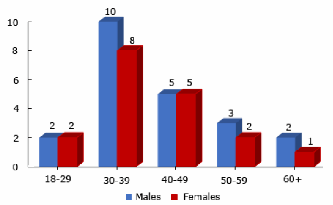
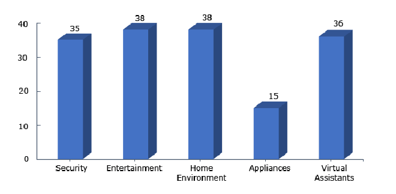
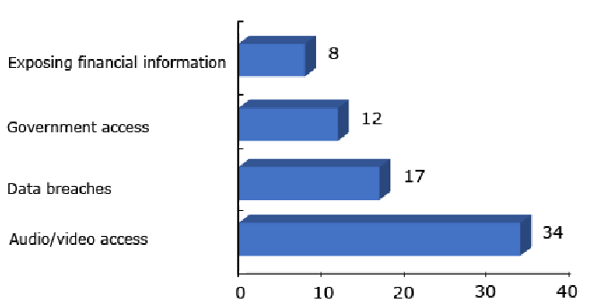
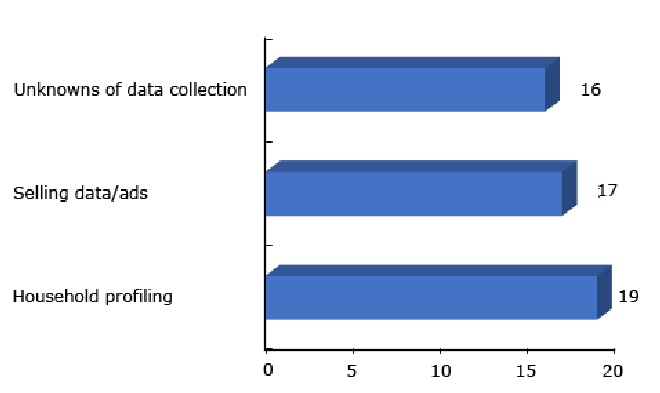
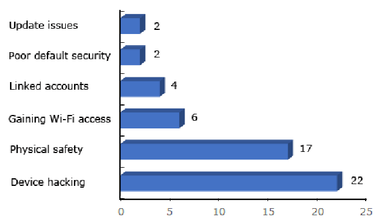

NIST IR 8330 日本語訳
英語タイトル : Research Report: User Perceptions of Smart Home Privacy and Security日本語タイトル : 調査報告書：スマートホームのプライバシーとセキュリティに対するユーザーの認識
公開日 : 2020-11-17
原文URL : https://csrc.nist.gov/pubs/ir/8330/final
翻訳編集 : 自動生成（有志による非公式の日本語訳）, 原文取得日 : 2026-10-31, 訳文 : 247 / 247 ブロック
[要約] NIST IR 8330 は、スマートホームのプライバシーとセキュリティに対するユーザーの認識をよりよく理解するために、スマートホームユーザー 40 人を対象として実施した詳細なインタビュー調査を報告する報告書です。報告書は、データの収集・利用に対する認識、プライバシーとセキュリティへの懸念、懸念を和らげるために講じられている緩和策に関する調査結果を示します。調査の結果、ユーザーはスマートホームのデータがどのように収集され利用されるかについて、さまざまで多くの場合は不明確な理解を持っており、多くの参加者はスマートホームの利点を優先してリスクを受け入れる意向を示していました。本報告書は規範を示すことを意図したものではありませんが、ユーザーの認識の理解は、製造者とユーザーに向けた今後のスマートホームのセキュリティおよびプライバシーに関するガイダンスに情報を提供するために活用できるとされています。
NISTIR 8330
NISTIR 8330
Research Report: User Perceptions of Smart Home Privacy and Security
調査報告書: スマートホームのプライバシーとセキュリティに対するユーザーの認識
Julie M. Haney Susanne M. Furman Yasemin Acar
Julie M. Haney Susanne M. Furman Yasemin Acar
This publication is available free of charge from: https://doi.org/10.6028/NIST.IR.8330
本刊行物は、次の場所から無料で入手できます: https://doi.org/10.6028/NIST.IR.8330
NISTIR 8330
NISTIR 8330
Research Report: User Perceptions of Smart Home Privacy and Security
調査報告書: スマートホームのプライバシーとセキュリティに対するユーザーの認識
Julie M. Haney Susanne M. Furman
Julie M. Haney Susanne M. Furman
Information Access Division Information Technology Laboratory
情報アクセス部門 情報技術研究所
Yasemin Acar
Yasemin Acar
Leibniz University Hannover
ライプニッツ大学ハノーファー
This publication is available free of charge from: https://doi.org/10.6028/NIST.IR.8330
本刊行物は、次の場所から無料で入手できます: https://doi.org/10.6028/NIST.IR.8330
November 2020
2020年11月
U.S. Department of Commerce Wilbur L. Ross, Jr., Secretary
米国商務省 Wilbur L. Ross, Jr. 長官
National Institute of Standards and Technology
米国国立標準技術研究所（National Institute of Standards and Technology）
Walter Copan, NIST Director and Undersecretary of Commerce for Standards and Technology
Walter Copan、NIST 所長兼商務次官（標準・技術担当）
Certain commercial entities or products may be identified in this document in order to describe a research procedure or concept adequately. Such identification is not intended to imply recommendation or endorsement by the National Institute of Standards and Technology, nor is it intended to imply that the entities or products are necessarily the best available for the purpose.
本書では、研究手順や概念を適切に説明するために、特定の商業的な事業体や製品に言及している場合があります。そのような言及は、米国国立標準技術研究所による推奨や推薦を意味するものではなく、それらの事業体や製品がその目的に最適であると意味するものでもありません。
National Institute of Standards and Technology Interagency or Internal Report 8330 Natl. Inst. Stand. Technol. Interag. Intern. Rep. 8330, 29 pages (November 2020)
National Institute of Standards and Technology Interagency or Internal Report 8330 Natl. Inst. Stand. Technol. Interag. Intern. Rep. 8330, 29 pages（2020年11月）
This publication is available free of charge from: https://doi.org/10.6028/NIST.IR.8330
本刊行物は、次の場所から無料で入手できます: https://doi.org/10.6028/NIST.IR.8330
Reports on Computer Systems Technology
コンピュータシステム技術に関する報告書
The Information Technology Laboratory (ITL) at the National Institute of Standards and Technology (NIST) promotes the U.S. economy and public welfare by providing technical leadership for the Nation’s measurement and standards infrastructure. ITL develops tests, test methods, reference data, proof of concept implementations, and technical analyses to advance the development and productive use of information technology. ITL’s responsibilities include the development of management, administrative, technical, and physical standards and guidelines for the cost-effective security and privacy of other than national security-related information in federal information systems.
米国国立標準技術研究所（NIST）の情報技術研究所（ITL）は、国の測定・標準のインフラストラクチャに技術的なリーダーシップを提供することにより、米国の経済と公共の福祉を促進しています。ITL は、情報技術の発展と生産的な利用を推進するため、テスト、テスト方法、参照データ、概念実証の実装、技術分析を開発しています。ITL の責務には、連邦情報システムにおける、国家安全保障に関するもの以外の情報について、費用対効果の高いセキュリティとプライバシーのための、管理面・運用面・技術面・物理面の標準とガイドラインの策定が含まれます。
Abstract
概要
Smart home technologies may expose adopters to increased risk to network security, information privacy, and physical safety. However, users may lack understanding of the privacy and security implications, while devices fail to provide transparency and configuration options. This results in little meaningful mitigation action to protect users’ security and privacy. To better understand users’ perceptions of smart home privacy and security, we conducted an in-depth interview study of 40 smart home users. In this document, we report the study findings related to perceptions of data collection/use, privacy and security concerns, and mitigations employed to alleviate concerns. We found that users have varied, and often unclear, understandings of how smart home data are collected and used. In addition, although users may have security and privacy concerns, many participants displayed a willingness to accept risks in favor of smart home benefits, and they feel limited responsibility for mitigating these due to constrained options or lack of knowledge to enact more sophisticated countermeasures. While this report is not meant to be prescriptive, an understanding of user perceptions may be used to inform future smart home security and privacy guidance for manufacturers and users.
スマートホーム技術は、導入者をネットワークセキュリティ、情報プライバシー、身体的安全に関するリスクの増大にさらす場合があります。しかし、デバイスが透明性や設定オプションを提供しない一方で、ユーザーはプライバシーとセキュリティへの影響を理解していない場合があります。その結果、ユーザーのセキュリティとプライバシーを守るための有意義なリスク緩和策はほとんど講じられていません。スマートホームのプライバシーとセキュリティに対するユーザーの認識をよりよく理解するため、スマートホームユーザー40人を対象に詳細なインタビュー調査を実施しました。本書では、データの収集・利用に対する認識、プライバシーとセキュリティへの懸念、懸念を軽減するために用いられている緩和策に関する調査結果を報告します。調査の結果、ユーザーはスマートホームのデータがどのように収集・利用されるかについて、さまざまな理解を持ち、その理解は多くの場合不明確であることがわかりました。さらに、ユーザーはセキュリティとプライバシーへの懸念を抱いている場合があるものの、多くの参加者はスマートホームの利点を優先してリスクを受け入れる意向を示しました。また、選択肢が限られていることや、より高度な対策を講じる知識が不足していることから、それらのリスクを緩和する責任は自分たちにはあまりないと感じています。本報告書は規範を示すことを意図したものではありませんが、ユーザーの認識を理解することで、製造者とユーザーに向けた今後のスマートホームのセキュリティおよびプライバシーのガイダンス策定に役立てることができます。
Key words
キーワード
cybersecurity; internet of things; privacy; smart home; usability.
サイバーセキュリティ、モノのインターネット、プライバシー、スマートホーム、ユーザビリティ。
Table of Contents
目次
List of Tables
表の一覧
List of Figures
図の一覧
1. Introduction
1. はじめに
The Internet of Things (IoT) market is rapidly expanding, with the number of IoT devices expected to increase from 26 billion in 2019 to 75 billion in 2025 [1]. With this increase, IoT smart home technology is becoming more pervasive, with an annual growth of 31% [2] and 34% of broadband households forecasted to have smart home systems by 2025 [3]. While early adopters of smart home technology have typically been more technically savvy, smart home devices are increasingly being purchased by users who may not understand the technology’s privacy and security implications [2]. Within the current dynamic threat and technology environment, the uptick of smart home technology adoption may expose users to increased risks to their network security, privacy of their information, and quite possibly their physical safety [4, 5]. As such, it is imperative that smart home consumers be able to protect the security and privacy of their devices while still being able to enjoy the benefits of the technology.
モノのインターネット（IoT）市場は急速に拡大しており、IoT デバイスの数は 2019年の 260 億台から 2025年には 750 億台に増加すると予想されています [1]。この増加に伴い、IoT のスマートホーム技術はますます普及しており、年間成長率は 31% [2] で、2025年までにブロードバンド世帯の 34% がスマートホームシステムを持つと予測されています [3]。スマートホーム技術の初期の導入者は、一般に技術に詳しい人が多かったのに対し、スマートホームデバイスは、その技術がプライバシーとセキュリティにもたらす影響を理解していない可能性のあるユーザーによって、ますます購入されるようになっています [2]。現在の動的な脅威と技術の環境において、スマートホーム技術の導入の増加は、ユーザーを、ネットワークセキュリティ、情報のプライバシー、そしておそらくは身体的安全に対するリスクの増大にさらす可能性があります [4, 5]。そのため、スマートホームの消費者が、その技術の利点を享受し続けながら、デバイスのセキュリティとプライバシーを守れるようにすることが不可欠です。
However, smart home devices may fail to provide transparency of privacy and security protections and configuration options, perhaps because some manufacturers view security as secondary to functionality [6]. Also, privacy may directly conflict with manufacturers’ business models of data monetization, so it may be in their interest to obfuscate existing controls while protecting themselves from legal repercussions. In combination with users’ lack of in-depth understanding of smart home device technology, functionalities, and privacy and security, there may be little meaningful mitigation actions being taken to protect consumer security and privacy [7–10].
しかし、スマートホームデバイスは、プライバシーとセキュリティの保護や設定オプションの透明性を提供していない場合があります。これは、セキュリティを機能性よりも二の次と見なしている製造者がいるためかもしれません [6]。また、プライバシーは、データの収益化という製造者のビジネスモデルと直接衝突する可能性があるため、既存の制御を分かりにくくしつつ、自らを法的な責任追及から守ることが、製造者の利益にかなう場合があります。これに、ユーザーがスマートホームデバイスの技術、機能、プライバシー、セキュリティについて深く理解していないことが重なって、消費者のセキュリティとプライバシーを守るための意味のある緩和策がほとんど取られていない可能性があります [7–10]。
To improve this situation, manufacturers and third parties with influence in the smart home space can follow a user-centered approach [11]. This approach requires empirical evidence of end users’ perceptions, needs, wants, and challenges in order to create meaningful and effective privacy and security controls, interfaces, guidelines, and other resources to support users. It is also important to understand what actions users are willing and able to take on their own versus which functions they feel are the duty of or would be better suited to others.
この状況を改善するため、製造者や、スマートホーム分野で影響力を持つサードパーティは、ユーザー中心のアプローチを取ることができます [11]。このアプローチでは、ユーザーを支援する意味があり効果的なプライバシーとセキュリティの制御、インタフェース、ガイドライン、その他のリソースを作成するために、エンドユーザーの認識、ニーズ、要望、課題についての実証的な証拠が必要です。ユーザーが自分自身で実行する意思と能力のある行動と、他者の責務である、または他者のほうが適していると感じる機能とを理解することも重要です。
Between February and June 2019, a research team led by the Visualization and Usability Group within the Information Technology Laboratory of the National Institute of Standards and Technology (NIST) conducted an exploratory, semi-structured interview study of 40 smart home users to understand their experiences with smart home devices and their perceptions of smart home privacy and security. We previously published research papers focused on smart home privacy and security mitigations [12], updates [13], and perceptions of responsibility [14]. Therefore, we do not go into detail about these topics in this report. Rather, we describe a subset of study results that address the following research questions (RQs):
2019年2月から6月にかけて、米国国立標準技術研究所（NIST）の情報技術研究所内の可視化・ユーザビリティグループが率いる研究チームは、スマートホームデバイスの利用経験と、スマートホームのプライバシーとセキュリティに対する認識を理解するために、スマートホームユーザー 40 人を対象に、探索的な半構造化インタビュー調査を実施しました。私たちは以前、スマートホームのプライバシーとセキュリティの緩和策 [12]、アップデート [13]、責任に対する認識 [14] に焦点を当てた研究論文を発表しています。そのため、本報告書ではこれらのトピックについて詳しくは述べません。代わりに、次の研究課題（RQ）に対処する調査結果の一部を説明します:
RQ1: What are users’ perceptions concerning the collection and use of data captured by their smart home devices?
RQ1: ユーザーは、スマートホームデバイスが取得するデータの収集と利用について、どのように認識していますか。
RQ2: What are smart home users’ privacy and security concerns, if any?
RQ2: スマートホームユーザーには、どのようなプライバシーとセキュリティへの懸念がありますか（ある場合）。
RQ3: What mitigation actions, if any, do smart home users take to address their privacy and security concerns?
RQ3: スマートホームユーザーは、プライバシーとセキュリティへの懸念に対処するために、どのような緩和策を講じていますか（講じている場合）。
The results revealed perceptions of data collection and use, privacy and security concerns, and mitigations employed to alleviate concerns. We found that users have varied, and often unclear, understandings of how smart home data are collected and used. In addition, although users may have security and privacy concerns, many participants displayed a willingness to accept risks in favor of smart home benefits, and they feel limited responsibility for mitigating these due to constrained options or lack of knowledge to enact more sophisticated countermeasures. This NISTIR is meant to report user-centric research findings that may help to inform smart home security and privacy guidance for manufacturers and users. However, we do not explicitly prescribe guidance or recommendations in this document.
結果から、データの収集と利用に対する認識、プライバシーとセキュリティへの懸念、懸念を和らげるために講じられている緩和策が明らかになりました。ユーザーは、スマートホームのデータがどのように収集され利用されるかについて、さまざまで、多くの場合は不明確な理解を持っていることがわかりました。さらに、ユーザーはセキュリティとプライバシーへの懸念を抱いている場合があるものの、多くの参加者は、スマートホームの利点を優先してリスクを受け入れる意向を示しており、選択肢が限られていること、またはより高度な対策を講じるための知識が不足していることから、これらを緩和する責任はあまりないと感じています。本 NISTIR は、製造者とユーザーに向けたスマートホームのセキュリティおよびプライバシーに関するガイダンスに情報を提供する一助となり得る、ユーザー中心の調査結果を報告することを意図しています。ただし、本書では、ガイダンスや推奨事項を明示的に規定することはしていません。
The target audience of this report consists of researchers, designers/manufacturers, administrators, policy makers, decision makers, and creators of privacy and security guidance who perform work related to smart home devices. Users of smart home devices may also be interested in the study results. Readers who are less interested in the research methodology may wish to proceed directly to section 3: Results.
本報告書の想定読者は、スマートホームデバイスに関連する業務を行う、研究者、設計者／製造者、管理者、政策立案者、意思決定者、およびプライバシー・セキュリティのガイダンスの作成者です。スマートホームデバイスのユーザーも、調査結果に関心を持つかもしれません。研究方法論にあまり関心がない読者は、第 3 節「結果」に直接進んでもかまいません。
2. Methodology
2. 方法論
Between February and June of 2019, we conducted a semi-structured interview study of 40 smart home users to understand their perceptions of and experiences with the devices. Semi-structured interviews follow an established interview protocol while allowing the interviewer to ask unanticipated follow-up questions to clarify or expand upon participant responses.
2019年2月から6月にかけて、私たちは、スマートホームデバイスに対するユーザーの認識と経験を理解するために、スマートホームユーザー 40 人を対象とした半構造化インタビュー調査を実施しました。半構造化インタビューは、確立されたインタビュープロトコルに従いつつ、インタビュアーが参加者の回答を明確にしたり広げたりするために、予期しなかった追加の質問をすることを認めるものです。
The National Institute of Standards and Technology Research Protections Office reviewed the protocol for this project (ITL-2018-0118) and determined it meets the criteria for “exempt human subjects research” as defined in 15 CFR 27, the Common Rule for the Protection of Human Subjects. Prior to data collection, participants were informed of the study purpose and how their data would be protected. Data were recorded without personal identifiers (instead using generic identifiers such as P10_A) and not linked back to individuals.
米国国立標準技術研究所の研究保護室は、このプロジェクトのプロトコル（ITL-2018-0118）を審査し、人間を対象とする研究の保護に関する共通規則である 15 CFR 27 で定義された「適用除外の人間対象研究」の基準を満たすと判断しました。データ収集に先立ち、参加者には調査の目的と、データがどのように保護されるかが知らされました。データは個人識別子なしで（P10_A のような汎用的な識別子を使用して）記録され、個人に紐付けられていません。
2.1 Participant Recruitment
2.1 参加者の募集
Eligible participants were adult users (18+ years of age) of smart home devices. A consumer research company did most of the recruitment (33 general public participants), while we identified an additional seven government employees to interview. General public participants were compensated with a $75 prepaid card. All participants lived in the Maryland-Virginia-District of Columbia region of the U.S.
適格な参加者は、スマートホームデバイスの成人（18歳以上）のユーザーでした。募集の大部分は消費者調査会社が行い（一般市民の参加者 33 人）、私たちは追加で政府職員 7 人をインタビュー対象として特定しました。一般市民の参加者には、75 ドルのプリペイドカードによる謝礼が支払われました。すべての参加者は、米国のメリーランド・バージニア・ワシントン D.C. 地域に住んでいました。
To determine eligibility for the study, prospective participants first completed an online screening survey about their smart home devices, their role with the devices (decision maker, purchaser, installer, administrator, troubleshooter, user), professional background, basic demographic information (age, gender), and number of household members. After reviewing the screening information, to ensure we found information-rich cases that covered the spectrum of smart home device users, we purposively selected participants for interviews if they had multiple smart home devices for which they were an active user. Despite a review of the screening questionnaire, one interviewed participant (P5) was found not to have any smart home devices (only a smartphone), so was excluded from study analysis.
調査の適格性を判断するため、参加見込み者はまず、自分のスマートホームデバイス、デバイスに対する自分の役割（意思決定者、購入者、設置者、管理者、トラブルシューター、ユーザー）、職歴、基本的な人口統計情報（年齢、性別）、世帯の人数に関するオンラインのスクリーニング調査に回答しました。スクリーニング情報を確認した後、スマートホームデバイスのユーザーの幅広い層を網羅する、情報量の多い事例を確実に見つけるため、アクティブなユーザーである複数のスマートホームデバイスを持つ人を、インタビューの対象者として意図的に選びました。スクリーニング用の質問票を確認したにもかかわらず、インタビューを行った参加者 1 人（P5）は、スマートホームデバイスを何も持っていない（スマートフォンのみ）ことが判明したため、調査の分析から除外されました。
For the purposes of the study, we defined smart home devices as being networked devices in the following categories:
この調査の目的上、スマートホームデバイスを、次のカテゴリに属するネットワーク接続されたデバイスと定義しました:
Smart security: e.g., security cameras, motion detectors, door locks
スマートセキュリティ: 例: セキュリティカメラ、人感センサー、ドアロック
Smart entertainment: e.g., smart televisions, speakers, streaming devices, other con- nected media systems
スマートエンターテインメント: 例: スマートテレビ、スピーカー、ストリーミングデバイス、その他の接続されたメディアシステム
Home environment: e.g., smart plugs, energy consumption monitors, lighting, thermostats, smoke and air quality sensors
住環境: 例: スマートプラグ、エネルギー消費モニター、照明、サーモスタット、煙センサーや空気質センサー
Smart appliances: e.g., refrigerators, coffee pots, robot vacuums, washers
スマート家電: 例: 冷蔵庫、コーヒーポット、ロボット掃除機、洗濯機
Virtual assistants: e.g., voice-controlled devices such as Amazon Echo (colloquially called Amazon Alexa) and Google Home.
バーチャルアシスタント: 例: Amazon Echo（俗に Amazon Alexa と呼ばれる）や Google Home などの音声操作デバイス。
Participant demographics are shown in Table 1. Of the 40 participants, 32 had installed and administered the devices (indicated with an A after the participant ID), and eight were non-administrative users of the devices (indicated with a U). Twenty-two (55%) were male and 18 (45%) were female. The majority (70%) were between the ages of 30 and 49 (see Figure 1). Participants were highly educated with 18 (45%) having a master’s degree or above and another 20 (50%) with a BS/BA. Thirty-four participants lived in multi-person households, with four couples among the participants (interviewed individually).
参加者の人口統計を表 1 に示します。40 人の参加者のうち、32 人がデバイスを設置して管理しており（参加者 ID の後に A を付けて示します）、8 人はデバイスの管理者ではないユーザーでした（U で示します）。22 人（55%）が男性、18 人（45%）が女性でした。大多数（70%）は 30 歳から 49 歳でした（図 1 を参照）。参加者の教育水準は高く、18 人（45%）が修士以上の学位を持ち、さらに 20 人（50%）が学士号を持っていました。34 人は複数人の世帯に住んでおり、参加者の中に 4 組の夫婦がいました（個別にインタビューしました）。
Figure 5 shows the general categories of smart home devices in participants’ homes. All but one participant had three or more individual smart home devices, with 34 (85%) having three or more different types of devices.
図 5 は、参加者の自宅にあるスマートホームデバイスの一般的なカテゴリを示しています。1 人を除くすべての参加者が 3 台以上の個別のスマートホームデバイスを持っており、34 人（85%）は 3 種類以上の異なる種類のデバイスを持っていました。
2.2 Data Collection
2.2 データ収集
In addition to the screening survey, we collected data via 40 in-person interviews. Interviews lasted between 22 and 80 minutes, averaging 41 minutes. All interviews were audio recorded and transcribed.
スクリーニング調査に加えて、40 回の対面インタビューによってデータを収集しました。インタビューは 22 分から 80 分で、平均 41 分でした。すべてのインタビューは音声録音され、文字起こしされました。
Prior to the interviews, the interview protocol was reviewed by an IoT domain expert to ensure the usage of correct terminology and consideration of reasonable aspects of smart home use. We also piloted the protocol with four individuals to determine face validity of the questions, appropriate use of language, and timing. The protocol was refined based on these inputs.
インタビューに先立ち、正しい用語が使われ、スマートホームの利用について妥当な側面が考慮されていることを確認するため、IoT の分野の専門家がインタビュープロトコルをレビューしました。また、質問の表面的妥当性、言葉づかいの適切さ、所要時間を判断するために、4 人を対象にプロトコルを試行しました。プロトコルは、これらの意見に基づいて改良されました。
| ID | Gen | Age | Ed | Degree | Occupation |
|---|---|---|---|---|---|
| P1_A | F | 50-59 | M | French, Education | Liaison |
| P2_A | M | 30-39 | M | Engineering | Lead engineer |
| P3_A | F | 40-49 | M | Law | Professor |
| P4_A | M | 60+ | M | Math, Governmental Admin | Retired |
| P6_U | F | 30-39 | B | Business | Events manager |
| P7_A | M | 30-39 | B | Computer Engineering | Software engineer |
| P8_A | M | 30-39 | B | Finance | Federal employee |
| P9_A | F | 30-39 | M | Environmental Science | Educationist |
| P10_A | M | 30-39 | B | Computer Science | Computer scientist |
| P11_A | M | 50-59 | M | Electrical Engineering | Electrical engineer |
| P12_U | F | 30-39 | M | Human Resources | Administrative assistant |
| P13_A | M | 50-59 | M | Psychology | Manager, Cognitive scientist |
| P14_U | F | 40-49 | H | N/A | Information specialist |
| P15_A | M | 30-39 | B | Computer Science | Computer scientist |
| P16_A | M | 40-49 | M | Computer Science, Biochemistry | Research chief |
| P17_A | F | 30-39 | M | Economics, Commerce | Systems engineer |
| P18_A | M | 30-39 | B | Social Science | Business consultant |
| P19_A | M | 50-59 | B | Business Administration | Retail services specialist |
| P20_A | F | 30-39 | B | Business Administration | Administrator |
| P21_U | F | 18-29 | B | I/O Psychology | Human resources manager |
| P22_A | M | 30-39 | B | Political Science | Executive admin assistant |
| P23_A | F | 40-49 | M | Fine Arts, Education | Community arts specialist |
| P24_A | M | 40-49 | B | Language, International Affairs | Operational safety analyst |
| P25_A | M | 30-39 | B | Finance | Program management analyst |
| P26_A | M | 30-39 | B | Finance | Analyst |
| P27_A | F | 40-49 | M | Law | Program coordinator |
| P28_A | F | 50-59 | B | Philosophy | Consultant |
| P29_A | M | 18-29 | M | Anthropology, Museum Studies | Events coordinator |
| P30_U | F | 18-29 | B | Theater Production | Event planner |
| P31_A | F | 30-39 | M | Policy, English | Lobbyist |
| P32_A | M | 30-39 | B | English | Health educator |
| P33_A | M | 18-29 | B | Information Systems | Senior technology analyst |
| P34_A | M | 40-49 | B | Economics | Financial analyst |
| P35_A | M | 40-49 | M | Accounting | Accountant |
| P36_A | F | 30-39 | B | Business Management | Project manager |
| P37_A | F | 40-49 | M | Business, Education | Assistant principal |
| P38_U | F | 60+ | M | Education | Special educator |
| P39_U | M | 60+ | M | American Studies | Retired |
| P40_U | F | 30-39 | C | Social Science | Customer service rep |
| P41_A | M | 40-49 | B | Security | Security |
| ID | 性別 | 年齢 | 学歴 | 専攻 | 職業 |
|---|---|---|---|---|---|
| P1_A | F | 50-59 | M | フランス語、教育学 | 連絡担当者 |
| P2_A | M | 30-39 | M | 工学 | 主任エンジニア |
| P3_A | F | 40-49 | M | 法学 | 教授 |
| P4_A | M | 60+ | M | 数学、行政学 | 退職者 |
| P6_U | F | 30-39 | B | 経営学 | イベントマネージャー |
| P7_A | M | 30-39 | B | コンピューター工学 | ソフトウェアエンジニア |
| P8_A | M | 30-39 | B | 金融 | 連邦政府職員 |
| P9_A | F | 30-39 | M | 環境科学 | 教育関係者 |
| P10_A | M | 30-39 | B | コンピューター科学 | コンピューター科学者 |
| P11_A | M | 50-59 | M | 電気工学 | 電気技術者 |
| P12_U | F | 30-39 | M | 人事 | 事務アシスタント |
| P13_A | M | 50-59 | M | 心理学 | マネージャー、認知科学者 |
| P14_U | F | 40-49 | H | N/A | 情報スペシャリスト |
| P15_A | M | 30-39 | B | コンピューター科学 | コンピューター科学者 |
| P16_A | M | 40-49 | M | コンピューター科学、生化学 | 研究責任者 |
| P17_A | F | 30-39 | M | 経済学、商学 | システムエンジニア |
| P18_A | M | 30-39 | B | 社会科学 | 経営コンサルタント |
| P19_A | M | 50-59 | B | 経営管理 | 小売サービス専門職 |
| P20_A | F | 30-39 | B | 経営管理 | 管理者 |
| P21_U | F | 18-29 | B | 産業・組織心理学 | 人事マネージャー |
| P22_A | M | 30-39 | B | 政治学 | 経営幹部の事務アシスタント |
| P23_A | F | 40-49 | M | 美術、教育学 | 地域芸術専門職 |
| P24_A | M | 40-49 | B | 言語、国際関係 | 業務安全アナリスト |
| P25_A | M | 30-39 | B | 金融 | プログラム管理アナリスト |
| P26_A | M | 30-39 | B | 金融 | アナリスト |
| P27_A | F | 40-49 | M | 法学 | プログラムコーディネーター |
| P28_A | F | 50-59 | B | 哲学 | コンサルタント |
| P29_A | M | 18-29 | M | 人類学、博物館学 | イベントコーディネーター |
| P30_U | F | 18-29 | B | 演劇制作 | イベントプランナー |
| P31_A | F | 30-39 | M | 政策、英語 | ロビイスト |
| P32_A | M | 30-39 | B | 英語 | 健康教育者 |
| P33_A | M | 18-29 | B | 情報システム | 上級技術アナリスト |
| P34_A | M | 40-49 | B | 経済学 | 金融アナリスト |
| P35_A | M | 40-49 | M | 会計学 | 会計士 |
| P36_A | F | 30-39 | B | 経営管理 | プロジェクトマネージャー |
| P37_A | F | 40-49 | M | 経営学、教育学 | 副校長 |
| P38_U | F | 60+ | M | 教育学 | 特別支援教育者 |
| P39_U | M | 60+ | M | 米国研究 | 退職者 |
| P40_U | F | 30-39 | C | 社会科学 | 顧客サービス担当者 |
| P41_A | M | 40-49 | B | セキュリティ | セキュリティ担当者 |
Table 1. Participant demographics
表 1. 参加者の人口統計
ID: A - smart home administrators/installers, U - smart home users; Gen (Gender); Ed (Education): M - Master’s degree, B - Bachelor’s degree, C - some college, H - High school.
ID: A - スマートホームの管理者／設置者、U - スマートホームのユーザー、Gen（性別）、Ed（学歴）: M - 修士号、B - 学士号、C - 大学教育を一部履修、H - 高校卒。

参加者の年齢区分を性別ごとに示す立体の棒グラフです。凡例は Males（男性、青）と Females（女性、赤）、縦軸は 0〜10 です。値は、18-29: 男性 2・女性 2、30-39: 男性 10・女性 8、40-49: 男性 5・女性 5、50-59: 男性 3・女性 2、60+: 男性 2・女性 1 です。
Fig. 1. Participant age categories by gender
図 1. 性別ごとの参加者の年齢区分

参加者が所有するスマートホーム機器の種類を示す立体の棒グラフです。縦軸は 0〜40 です。値は、Security（セキュリティ）35、Entertainment（エンターテインメント）38、Home Environment（住環境）38、Appliances（家電）15、Virtual Assistants（バーチャルアシスタント）36 です。
Fig. 2. Types of smart home devices owned by participants
図 2. 参加者が所有するスマートホームデバイスの種類
Interview questions addressed several areas in the following order: understanding of smart home terminology; purchase decision process; general use; general concerns, likes, and dislikes; installation and troubleshooting; privacy and data collection/use; security; and safety. In this paper, we focus only on collected data pertaining to privacy and security.
インタビューの質問は、次の順序で、いくつかの領域を扱いました: スマートホームの用語の理解、購入の意思決定プロセス、一般的な使用、一般的な懸念・好きな点・嫌いな点、設置とトラブルシューティング、プライバシーとデータの収集・利用、セキュリティ、安全性。本論文では、プライバシーとセキュリティに関する収集データのみに焦点を当てます。
Note that participants may have mentioned privacy and security concepts throughout the interview (for example, when asked if they had any hesitations prior to device purchase), not just during the designated privacy and security portions. Prior to each of the designated privacy and security sections, we provided participants with a short description of each term (privacy and security) in non-technical language to focus their responses. This differentiation ultimately helped us contrast and compare participants’ perceptions of each concept as well as where they conflated the two.
なお、参加者は、プライバシーとセキュリティについて指定された部分だけでなく、インタビュー全体を通じて（たとえば、デバイスの購入前にためらいがあったかどうかを尋ねられたときに）、プライバシーとセキュリティの概念に言及した可能性があります。プライバシーとセキュリティについて指定された各部分に先立ち、回答の焦点を絞るために、参加者に各用語（プライバシーとセキュリティ）の短い説明を専門用語を使わずに提供しました。この区別により、最終的に、各概念に対する参加者の認識を対比し比較すること、また両者を混同している点を確認することができました。
2.3 Data Analysis
2.3 データ分析
Data analysis started with coding, which involves categorization of data. In the case of interview data, units of text are labeled based on their topic, with these labels being called “codes.” Units may consist of a phrase, sentence, or multiple sentences. For example, the unit of text “the companies that have the information, you know data breaches happen. . . So that was a concern as well” was assigned the code “Data Breach Concerns.” We employed both deductive and inductive coding practices, which allowed for an emergence of themes. Deductive coding involves starting with pre-defined codes that the researchers believe will appear in the data. With inductive coding, codes emerge from the data itself.
データ分析は、データの分類を伴うコーディングから始まりました。インタビューデータの場合、テキストの単位がトピックに基づいてラベル付けされ、これらのラベルは「コード」と呼ばれます。単位は、語句、1 文、または複数の文で構成されることがあります。たとえば、「その情報を持っている企業、ほら、データ侵害は起きますよね。…だからそれも懸念でした」というテキストの単位には、「データ侵害への懸念」というコードが割り当てられました。私たちは、演繹的なコーディングと帰納的なコーディングの両方を用い、これによりテーマが浮かび上がるようにしました。演繹的コーディングでは、研究者がデータに現れると考える、あらかじめ定義されたコードから始めます。帰納的コーディングでは、コードはデータそのものから現れます。
Analysis of the interview transcripts began with the development of an a priori code list based on the research questions. Using the initial code list, each of the three research team members individually coded a subset of four interviews, then met as a group to discuss code application. Related codes were grouped into higher-level categories, called axial codes. For example, the codes “Data Breach Concerns,” “Audio/video access,” and “Financial loss” were combined into an axial code called “Security Concerns.” As part of the final codebook (a list of codes to be used in analysis), all codes were “operationalized,” which involves formally defining each code to ensure understanding among all coders.
インタビューの文字起こしの分析は、研究課題に基づく事前のコードリストの作成から始まりました。最初のコードリストを使い、研究チームの 3 人のメンバーがそれぞれ個別に 4 件のインタビューの一部をコーディングし、その後グループとして集まり、コードの適用について議論しました。関連するコードは、軸足コードと呼ばれる上位のカテゴリにグループ化されました。たとえば、「データ侵害への懸念」「音声／映像へのアクセス」「金銭的損失」というコードは、「セキュリティ上の懸念」という軸足コードにまとめられました。最終的なコードブック（分析に使用するコードのリスト）の一部として、すべてのコードが「操作的に定義」されました。これは、すべてのコーダー間で理解が一致するよう、各コードを正式に定義することを伴います。
Using the codebook, we then coded the remaining interviews independently, with each transcript coded by two researchers. Each pair of coders then examined and resolved differences in code application. Throughout the analysis phase, during regular group meetings, we discussed relationships among the codes and our interpretations.
次に、コードブックを使って、残りのインタビューを独立してコーディングし、各文字起こしは 2 人の研究者がコーディングしました。その後、各コーダーのペアが、コードの適用の違いを確認し、解決しました。分析フェーズを通じて、定期的なグループ会議の中で、コード間の関係と私たちの解釈について議論しました。
2.4 Limitations
2.4 制約事項
As with any interview study, participant responses are subject to recall, self-report, and social desirability biases. In addition, the participants, who were generally highly educated professionals in a high-income metropolitan area, may not be fully representative of the overall smart home user population in the U.S. However, our study population appears to mirror smart home adopters characterized in prior industry surveys [15]. We also acknowledge that U.S. smart home users may have different privacy and security attitudes from those in other countries, for example, due to political or cultural factors related to privacy expectations and tolerance. In addition, our study only captures perceptions of smart home adopters of multiple devices, so does not adequately capture those of limited adopters or non-adopters. These limitations could be addressed with replication of this study in other countries or a global quantitative survey informed by the results of our study. However, even with its limitations, the study serves as an exploratory investigation that can inform subsequent surveys of broader populations.
どのインタビュー調査でもそうであるように、参加者の回答は、想起バイアス、自己報告バイアス、社会的望ましさバイアスの影響を受けます。加えて、参加者は、高所得の大都市圏に住む、一般に高学歴の専門職であり、米国のスマートホームユーザー全体を十分に代表していない可能性があります。ただし、私たちの調査対象者は、過去の業界調査 [15] で特徴づけられたスマートホームの導入者を反映しているように見えます。また、米国のスマートホームユーザーは、たとえばプライバシーへの期待や許容度に関する政治的・文化的要因のために、他の国のユーザーとは異なるプライバシーとセキュリティへの態度を持っている可能性があることも認識しています。さらに、本調査は、複数のデバイスを導入しているスマートホーム導入者の認識しか捉えておらず、導入が限定的な人や非導入者の認識は十分に捉えていません。これらの制約は、他の国での本調査の再現、または本調査の結果を踏まえた世界規模の定量調査によって対処できます。しかし、制約があっても、本調査は、より広い母集団を対象とするその後の調査に情報を提供できる探索的な調査として役立ちます。
3. Results
3. 結果
In this section, we report results from a subset of the interview data specific to privacy and security. Note that these results often describe participant perceptions, which may or may not reflect reality.
この節では、インタビューデータのうち、プライバシーとセキュリティに特化した一部の結果を報告します。これらの結果は、多くの場合、参加者の認識を述べたものであり、現実を反映している場合もそうでない場合もあることに注意してください。
Example quotes from participants are provided throughout. Counts of participants mentioning specific topics are provided in some cases, not as an attempt to distill our qualitative data to quantitative measures, but rather to illustrate weight or unique cases.
参加者の発言の引用例を全体にわたって示します。特定のトピックに言及した参加者の人数は、定性的なデータを定量的な尺度に集約しようとするものではなく、重みや特異な事例を示すために、一部の箇所で提示しています。
3.1 Smart Home Data
3.1 スマートホームのデータ
We asked study participants several questions related to their perceptions of smart home data collection and usage. We summarize their responses in this section.
私たちは、調査の参加者に、スマートホームのデータの収集と利用に対する認識に関するいくつかの質問をしました。この節では、その回答を要約します。
3.1.1 Collection
3.1.1 収集
Participants were asked what data, if any, they thought their smart home devices were collecting. Most were aware that data were being collected but provided different levels of specificity as to the kinds of data. Types of data mentioned during the interviews included home environment readings, energy usage, issued commands, audio, video, entertainment viewing, and account and service subscription information, among others. One participant described his perceptions of collected data:
参加者は、スマートホームデバイスがどのようなデータを収集していると思うか（思う場合）を尋ねられました。大半は、データが収集されていることを認識していましたが、データの種類についての具体性の度合いはさまざまでした。インタビュー中に挙げられたデータの種類には、住環境の測定値、エネルギー使用量、発行されたコマンド、音声、映像、エンターテインメントの視聴、アカウントおよびサービス契約情報などがありました。ある参加者は、収集されるデータについての自分の認識を次のように説明しました:
“I’m sure that the [smart thermostat] is collecting, I know it’s collecting how hot I’m heating the room, how long it’s being heated, time periods which it’s being heated. . . The plugs, I’m sure they collect how long they’re on for, how frequently they get turned on and off, how much power it’s providing to the external outlet” (P10_A).
「[スマートサーモスタット]が収集しているのは確かです。部屋をどれだけ暖めているか、どれくらいの時間暖めているか、どの時間帯に暖めているかを収集しているのは知っています。…プラグは、オンになっている時間の長さ、オン・オフに切り替わる頻度、外部コンセントに供給している電力量を収集しているのは確かです」（P10_A）。
A technically-savvy, do-it-yourselfer created a separate segment on his home network that only contained smart home devices. He regularly monitored the traffic leaving the network, observing as much as possible the kinds and volume of smart home data sent out of the network even though much of it was encrypted:
技術に詳しい自作愛好家のある参加者は、自宅ネットワーク上に、スマートホームデバイスだけを含む別のセグメントを作成しました。彼は、ネットワークから出ていくトラフィックを定期的に監視し、その多くが暗号化されていたものの、ネットワークの外へ送信されるスマートホームデータの種類と量を可能な限り把握していました:
“I know they are collecting environmental data. I know they are collecting certain event data, and, unfortunately, I know they’re also collecting voice data inside the premises. I also know they are collecting our energy usage profiles. . . There’s packets attempting to leave every day. Yesterday I ran a profile. There was six megabytes of data that was trying to leave the network” (P16_A).
「環境データを収集していることは知っています。特定のイベントデータも収集していますし、残念ながら、建物内の音声データも収集していることを知っています。うちのエネルギー使用プロファイルも収集していることは知っています。…毎日、パケットが外へ出ようとしています。昨日、プロファイルを取ってみました。6 メガバイトのデータがネットワークから出ようとしていました」（P16_A）。
Participants with virtual assistants or smart cameras discussed the “always on” mode of these devices and how audio and video are collected and stored. A smart security camera owner said, “I know it’s always recording. So it’s recording all your conversations around it, pretty much just recording everything you do and uploading it to the cloud” (P22_A). A participant with a virtual assistant commented, “I know it records and stores every command that you give it, because you can retrieve them in the app, and you can actually play the recording of you saying whatever you said” (P24_A).
バーチャルアシスタントやスマートカメラを持つ参加者は、これらのデバイスの「常時オン」モードと、音声や映像がどのように収集・保存されるかについて話しました。スマートセキュリティカメラの所有者は、「常に録画しているのは知っています。つまり、周囲の会話をすべて録音し、基本的にあなたがすることをすべて記録して、それをクラウドにアップロードしているんです」と述べました（P22_A）。バーチャルアシスタントを持つ参加者は、「与えた指示をすべて記録して保存していることは知っています。アプリで取り出せますし、自分が言ったことの録音を実際に再生できるからです」とコメントしました（P24_A）。
Participants also mentioned data collected when setting up an account, for example via companion apps on their smart phones:
参加者は、たとえばスマートフォンのコンパニオンアプリを通じたアカウント設定時に収集されるデータにも言及しました:
“All these devices require an account, so you’re giving them your email and you’re probably opting in, whether you know it or not, on them sending your information to third parties. So they now have your name, in a lot of cases your address, phone number, maybe even a cell phone number, your email address, and whatever password you associate with that email address” (P11_A).
「これらのデバイスはどれもアカウントが必要なので、メールアドレスを渡すことになりますし、知っているかどうかにかかわらず、おそらく、あなたの情報をサードパーティに送ることに同意しているはずです。つまり、彼らは今や、あなたの名前、多くの場合は住所、電話番号、場合によっては携帯電話番号、メールアドレス、そのメールアドレスに関連付けたパスワードも持っているわけです」（P11_A）。
Another participant spoke about payment information being collected by smart entertainment subscription services: “If you’re doing it through the TV itself, you’re going to have to set up an account and then put in your credit card information” (P20_A).
別の参加者は、スマートエンターテインメントの定額サービスによって収集される支払い情報について話しました。「テレビ本体を通じて利用する場合は、アカウントを設定してから、クレジットカード情報を入力する必要があります」（P20_A）。
Others were less specific about the kinds of data they thought were being collected. One participant thought that his devices were collecting “everything it sees, everything it hears, everything you input into it, all the data you provide. I think it collects all of it somewhere” (P26_A). Another talked in broad terms about information being collected from his smart entertainment devices: “I’m sure they’re collecting what you’re watching, kind of your habits. I’m sure they’re collecting a lot of stuff that I don’t even know about” (P18_A).
収集されていると考えるデータの種類について、それほど具体的でない参加者もいました。ある参加者は、自分のデバイスが「見えるものすべて、聞こえるものすべて、入力するものすべて、提供するデータのすべてを収集しています。それらをすべて、どこかで収集していると思います」と考えていました（P26_A）。別の参加者は、スマートエンターテインメントデバイスから収集される情報について、大まかに語りました。「何を見ているか、習慣のようなものを収集しているのは確かでしょう。自分が知りもしないことをたくさん収集しているはずです」（P18_A）。
3.1.2 Destination
3.1.2 送信先
We asked participants where they thought collected data go. Twenty-three participants thought that data are sent to the smart home manufacturer. Eight of these made specific mention of the manufacturer’s cloud or cloud service as a destination. For example, one participant said, “Devices that are collecting sensor information, all that sensor information leaves your house and is stored in a cloud service” (P11_A). Others referred to manufacturer servers or databases: “it goes to the companies, I guess their servers, a database” (P28_A).
私たちは参加者に、収集されたデータはどこへ行くと思うかを尋ねました。23 人の参加者が、データはスマートホームの製造者に送られると考えていました。そのうち 8 人は、送信先として製造者のクラウドまたはクラウドサービスに具体的に言及しました。たとえば、ある参加者は、「センサー情報を収集しているデバイスでは、そのセンサー情報はすべて家の外に出て、クラウドサービスに保存されます」と述べました（P11_A）。製造者のサーバーやデータベースに言及する人もいました。「企業に行って、おそらく彼らのサーバー、データベースに入るのでしょう」（P28_A）。
Some participants expressed uncertainty about whether manufacturers send the data elsewhere after receiving it, as demonstrated by one participant who commented, “hopefully they’re not selling it. We don’t know” (P28_A). Another remarked:
製造者がデータを受け取った後、それを他に送るかどうかについて不確かさを表明した参加者もおり、ある参加者は、「売っていないとよいのですが。わかりません」とコメントしました（P28_A）。別の参加者は次のように述べました:
“I know for a fact, the way the [virtual assistant] and the other voice-based smart devices work is every audio segment that it records gets sent back to a server to be analyzed. And what they do with it after it’s received is a little bit of a question mark” (P15_A).
「[バーチャルアシスタント]やその他の音声ベースのスマートデバイスの仕組みは、録音された音声の各断片が分析のためにサーバーに送り返される、ということだと確かに知っています。そして、受け取った後にそれをどう扱うのかは、少しわからないところです」（P15_A）。
Thirteen participants believed that manufacturers transferred or sold smart home data to third parties, most often advertisers. One participant commented, “I’m pretty sure they’re selling that information to different advertisers. . . because the best way to make money is through ads that are specifically targeted to exactly what the person needs” (P22_A). A user believed “companies get this data and send it over to marketing firms” (P21_U).
13 人の参加者は、製造者がスマートホームのデータをサードパーティ、最も多くは広告主に転送または販売していると考えていました。ある参加者は、「さまざまな広告主にその情報を売っているのはほぼ間違いないと思います。…お金を稼ぐ最良の方法は、その人が必要とするものにぴったり合わせたターゲット広告だからです」とコメントしました（P22_A）。あるユーザーは、「企業はこのデータを入手して、マーケティング会社に送っている」と考えていました（P21_U）。
Still others thought that the government was directly collecting smart home data (6 participants). P14_U thought that data go “to Big Brother pretty much. CIA” Another participant went into more detail:
さらに、政府がスマートホームのデータを直接収集していると考える参加者もいました（6 人）。P14_U は、データは「ほとんどビッグ・ブラザーのところへ行きます。CIA です」と考えていました。別の参加者は、さらに詳しく述べました:
“I assume it’s compiled somewhere in a research lab of the government. . . And I can only imagine there is some like poor sap somewhere in the government who has to weed through like thousands and thousands of data. . . to maybe find something. But I assume it’s just some basement in the government” (P30_U).
「政府のどこかの研究所に集約されているのだと思います。…政府のどこかに、何千ものデータをふるいにかけて、…何かを見つけようとする気の毒な人がいるのだろうと想像するだけです。でも、おそらく政府のどこかの地下室で行われているだけだと思います」（P30_U）。
Finally, several participants provided vague answers to the question about data destination. Five talked about the data going out to the internet in general, e.g., “Up in internet world” (P12_U). Four others were not sure. For example, one said, “I kind of think that it goes nowhere. . . Who knows?” (P23_A). Another expressed apathy: “Who knows?. . . I guess, who cares, is my answer” (P8_A).
最後に、データの送信先についての質問に、あいまいな回答をした参加者もいました。5人は、データが一般的にインターネットに送られると話しました。たとえば、「インターネットの世界の上のほう」（P12_U）です。ほかの4人は送信先がわからないと答えました。たとえば、ある参加者は、「どこにも行かないんじゃないかと思います。…誰にわかるでしょう」と言いました（P23_A）。別の参加者は無関心を示し、「誰にわかる？…私の答えは、誰が気にするの、ですね」と述べました（P8_A）。
3.1.3 Use
3.1.3 利用
Participants were asked how they think the data collected by smart home devices are used. Several believed that data are analyzed by manufacturers for product improvement purposes. From a functionality perspective, one participant commented that his smart vacuum cleaner “was sending back maps of the area that it’s cleaning and scoping out, so it can improve and build better maps” (P13_A). Another remarked, “I’m sure they’re also collecting information about the device, if it’s faulty or if you know maybe how quickly their customer support team reaches out to us” (P28_A). Data analysis was also viewed as a way to improve future versions of the product or inform the design of completely new products. A participant believed that, through data collection, manufacturers “study consumers’ habits, the behavior, so that will help them to come up with better products to solve their needs” (P36_A). An owner of a smart thermostat viewed the data as contributing to a larger effort to save energy: “it definitely goes into a database where they collect and analyze that information which actually, I’m okay with. If it’s going to save the environment, sure” (P6_U).
参加者は、スマートホームデバイスが収集したデータがどのように利用されると思うかを尋ねられました。何人かは、データが製品改良のために製造者によって分析されると考えていました。機能性の観点から、ある参加者は、自分のスマート掃除機が「掃除している範囲と探索している範囲の地図を送り返していて、それによって改良し、よりよい地図を作れるようになる」とコメントしました（P13_A）。別の参加者は、「デバイスについての情報、たとえば故障しているかどうかや、カスタマーサポートチームがどれくらい早くこちらに連絡してくるかなども収集しているのは確かでしょう」と述べました（P28_A）。データ分析は、製品の将来のバージョンの改良や、まったく新しい製品の設計に情報を提供する手段とも見なされていました。ある参加者は、データ収集を通じて製造者が「消費者の習慣や行動を研究し、それがニーズを満たすよりよい製品を考え出す助けになる」と考えていました（P36_A）。スマートサーモスタットの所有者は、データを、省エネというより大きな取り組みに貢献するものと見ていました。「情報を収集して分析するデータベースに確実に入っていますが、実はそれは構いません。環境を守ることになるなら、もちろんです」（P6_U）。
As also reflected in participant responses related to data destination, many of the interviewed smart home users thought that data are used by the manufacturer or third parties for targeted advertising. One participant said that manufacturers are “doing data mining. . . It’s not malicious I don’t think. I mean everything about it is to sell you a product, everything about the internet is to sell you a product” (P40_A). Another thought that manufacturers or third parties “take that information and potentially target emails with advertisements to you, because they know where you live, they might know what type of devices you have in your house” (P11_A). A user talked about data being sold “to agencies that do these surveys to kind of figure out what’s popular out there in the market” (P21_U).
データの送信先に関する参加者の回答にも表れているように、インタビューを受けたスマートホームユーザーの多くは、データが製造者やサードパーティによってターゲット広告に利用されると考えていました。ある参加者は、製造者は「データマイニングをしています。…悪意はないと思います。つまり、それに関することはすべて製品を売るためで、インターネットに関することはすべて製品を売るためです」と述べました（P40_A）。別の参加者は、製造者やサードパーティが「その情報を入手して、あなたの居住地や家にどんな種類のデバイスがあるかを知っているので、広告付きのメールをあなたを対象に送る可能性がある」と考えていました（P11_A）。あるユーザーは、データが「市場で何が人気かを把握するために、こうした調査を行う機関に」売られていると話しました（P21_U）。
A few participants saw a use of smart home data by law enforcement agencies when needed. One remarked, “If there’s a microphone in your house and they have a warrant to collect information, they’ll use it” (P2_A). Another talked about the value of law enforcement having access to audio logs: “For criminal cases or if something really happens that’s scary or bad, it would be really good to have a way to play that information back” (P23_A).
必要な場合に、法執行機関がスマートホームのデータを利用すると考えた参加者も数人いました。ある参加者は、「家の中にマイクがあり、情報を収集する令状があれば、使うでしょう」と述べました（P2_A）。別の参加者は、法執行機関が音声ログにアクセスできることの価値について話しました。「刑事事件や、本当に怖いことや悪いことが起きた場合に、その情報を再生できる方法があるのは、とてもいいことでしょう」（P23_A）。
Finally, several participants personally made use of the data to monitor what is going on in their homes. For example, one discussed how she uses data from her smart door lock to monitor entry to the home: “We have a maid that comes in on Wednesdays. We know exactly when she comes in the house, when she leaves” (P14_U). Another talked about benefits of looking at the data collected by his smart thermostat:
最後に、何人かの参加者は、自宅で何が起きているかを監視するために、自らデータを利用していました。たとえば、ある参加者は、スマートドアロックのデータを使って家への入室を監視していることを話しました。「水曜日にはお手伝いさんが来ます。彼女が家に入る時間と出る時間が正確にわかります」（P14_U）。別の参加者は、スマートサーモスタットが収集したデータを見る利点について話しました:
“If there’s something I notice in that data that’s actionable, I’ll try to take action. . . With the HVAC system, if I’m noticing that it’s running a lot more than I would like it to or expect it to or it’s not affecting the temperature change as quickly as it should, then that might tip me off that it’s time to change a filter. Or maybe I want to check if any windows are cracked or if there are any leaks, any areas that I want to insulate, things like that. I mean, it has tipped me off to the furnace having problems running and starting, things like that” (P15_A).
「そのデータの中に、対処できる何かに気づいたら、対処しようとします。…HVACシステムの場合、自分が望む、または予想するよりもずっと頻繁に稼働している、あるいは温度がそうあるべき速さで変化していないことに気づけば、フィルターを交換する時期だと気づくかもしれません。あるいは、窓にひびが入っていないか、水漏れがないか、断熱したい場所がないか、といったことを確認しようと思うかもしれません。実際、暖房炉が稼働や起動に問題を抱えていると気づいたこともあります」（P15_A）。
3.1.4 Policies
3.1.4 ポリシー
Multiple interviewees discussed how device and manufacturer privacy policies and user level agreements are meant to provide information on data collection and use, but few found that information to be satisfactory or easily understood. One participant talked about manufacturers providing privacy-related information: “Sometimes I think, by law, they might have to update, or at least send out, their information on privacy, what data are collected, et cetera. . . It’s laborious, it’s in lawyer speak” (P31_A). Another commented:
複数のインタビュー対象者が、デバイスや製造者のプライバシーポリシーと利用者契約は、データの収集と利用に関する情報を提供することを意図したものだと話しましたが、その情報に満足した人や、容易に理解できた人はほとんどいませんでした。ある参加者は、製造者がプライバシー関連の情報を提供することについて話しました。「ときどき、法律上、プライバシーに関する情報や、どんなデータが収集されるかなどを更新するか、少なくとも送付しなければならないのだろうと思います。…手間がかかるうえ、弁護士のような言葉遣いです」（P31_A）。別の参加者はこうコメントしました:
“There’s the end user licensing agreement for everything that’s 100 pages long, no one ever reads. But everything is disclosed in there if you care to read it, which nobody ever does. I don’t think I’ve read one my entire life” (P40_A).
「あらゆるものに100ページもあるエンドユーザーライセンス契約があって、誰も読みません。でも、読む気があれば、すべてがそこに開示されていますが、誰も読みません。私は生涯で1つも読んだことがないと思います」（P40_A）。
Several participants expressed a general lack of trust related to manufacturer’s reported data collection policies. For example, one smart home administrator commented:
何人かの参加者は、製造者が公表しているデータ収集ポリシーに関する全般的な不信感を表明しました。たとえば、あるスマートホームの管理者はこうコメントしました:
“I don’t have much trust in what companies say they collect and don’t collect. I think they collect what they can and use it. Even if they say they’re not collecting it, I think it’s being used somehow” (P10_A).
「企業が何を収集し、何を収集しないかについて述べることは、あまり信用していません。収集できるものは収集して使っていると思います。収集していないと言っていても、何らかの形で使われていると思います」（P10_A）。
Another participant reflected, “I don’t trust the information that’s provided, so I don’t really believe that when they say they’re transparent, that they really are” (P22_A). A smart home owner discussed how he believes control options for data collection are set to the advantage of manufacturers: “I feel like the default is always full access, so you have to really look for and pursue stricter settings” (P18_A).
別の参加者は、「提供されている情報を信用していないので、彼らが透明だと言っても、本当に透明だとは信じていません」と振り返りました（P22_A）。あるスマートホームの所有者は、データ収集の制御オプションが製造者に有利になるように設定されていると考えていることを話しました。「デフォルトはいつも完全なアクセスだという気がするので、より厳しい設定を本当に探して、追求しなければなりません」（P18_A）。
3.1.5 Control
3.1.5 制御
Interviewees were asked in what ways, if any, their device or the device manufacturer provides a means to control or manage what information is collected and how it is shared. Several said that they did not think there was a way to control the information (7 participants) or that they did not know (11 participants).
インタビュー対象者は、デバイスまたはデバイスの製造者が、収集される情報やその共有方法を制御・管理する手段を提供しているか、また提供している場合はどのような手段かを尋ねられました。情報を制御する方法はないと思う（7 人）、またはわからない（11 人）と答えた参加者もいました。
A few mentioned specific control options. A smart home administrator who owned a number of devices answered:
具体的な制御オプションに言及した参加者も数人いました。多数のデバイスを所有するあるスマートホームの管理者は、次のように答えました:
“Depends on the device. Like the light bulbs and the plugs give you nothing. The [smart entertainment device] gives you a couple of choices between usage statistics and problem, like if there’s a failure or something. . . It gives you the choice to automatically report like a crash. But it also gives you the choice like if you just want usage statistics to be sent to [manufacturer], which I don’t. So the thermostat’s like that too, you have the choice send them extra information for their diagnostic, whatever that means, purposes” (P13_A).
「デバイスによります。たとえば、電球やプラグには選択肢がありません。[スマートエンターテインメントデバイス]では、使用状況の統計を送るか、障害などの問題を報告するかについて、いくつか選択肢があります。…クラッシュを自動的に報告するかどうかを選べます。使用状況の統計だけを[製造者]に送るかどうかも選べますが、私は送りません。サーモスタットも同様で、診断目的で追加情報を送るかどうかを選べます。それが何を意味するのかはわかりませんが」（P13_A）。
Another participant spoke about settings she remembered seeing on her devices:
別の参加者は、自分のデバイスで見かけた覚えのある設定について話しました:
“They have choices where you can say send your data, or don’t send your data, or like I said the [virtual assistant] has a ‘delete your history daily,’ or store it for whatever. I forgot what the other options were, but I just automatically chose delete it daily” (P27_A).
「データを送るか送らないかを選べますし、さっき言ったように、[バーチャルアシスタント]には『履歴を毎日削除する』か、何らかの形で保存するかという選択肢があります。ほかにどんな選択肢があったかは忘れましたが、自動的に毎日削除するほうを選びました」（P27_A）。
Several participants were vaguely familiar with some data collection settings, but not sure about all options available to them. For example, one participant commented:
何人かの参加者は、一部のデータ収集の設定についてぼんやりと知っていましたが、自分が利用できるすべてのオプションについては確信がありませんでした。たとえば、ある参加者はこうコメントしました:
“I think I’ve read that [virtual assistant] has the option to delete some information. I know that there’s a physical mute button on the side of them that you can flip. . . It turns everything off. I don’t know about anything beyond that. I don’t know enough about whether or not there’s a way to control what specifically it deletes, or if I can be like, delete everything” (P29_A).
「[バーチャルアシスタント]には、一部の情報を削除するオプションがあると読んだ気がします。側面に物理的なミュートボタンがあり、それを切り替えられるのは知っています。…それですべてがオフになります。それ以上のことは知りません。具体的に何が削除されるのかを制御する方法があるのか、あるいは『すべて削除』のようにできるのかについては、よく知りません」（P29_A）。
Several remarked that opting out of certain data collection practices can be difficult. Two participants were aware that a letter had to be sent to the manufacturer in order to opt out, with one of those saying, “There’s an opt-out thing that no one’s ever going to do. . . I saw the address, a mailing address, and I, out of curiosity, was like, ‘What is this mailing address for?’ It was the opt-out” (P3_A). Another smart home owner was resigned to the fact that she did not have much of choice with respect to opting in or out of data collection: “at the end it’s like, okay, if I want to use this device, I have to opt in” (P17_A). P41_U was also resigned: “No one reads the agreements. We just want to use our device, so we just agree to it, I guess.”
特定のデータ収集慣行をオプトアウトするのは難しい場合があると述べた参加者も数人いました。2人の参加者は、オプトアウトするには製造者に手紙を送る必要があると認識しており、そのうちの1人は、「誰もやらないようなオプトアウトの手続きがあります。…住所、郵送先住所を見て、好奇心から『この郵送先住所は何のためだろう』と思ったら、オプトアウトのためでした」と述べました（P3_A）。別のスマートホーム所有者は、データ収集にオプトインするかオプトアウトするかについて、選択の余地がほとんどないことを諦めて受け入れていました。「結局、このデバイスを使いたいなら、オプトインしなければなりません」（P17_A）。P41_Uも諦めていました。「誰も契約書を読みません。私たちはデバイスを使いたいだけなので、同意するのだと思います」。
3.2 Concerns
3.2 懸念事項
In the first half of interviews, participants were asked if they had any hesitations prior to device purchase, if they had any general concerns about their smart home devices, and what other members of the household thought about the devices. Two-thirds of participants mentioned privacy-related concerns and half acknowledged security concerns in the context of these questions. These unprompted mentions offer interesting insight into whether privacy and security concerns are in the forefront of users’ minds.
インタビューの前半では、参加者は、デバイスの購入前にためらいがあったか、自分のスマートホームデバイスについて一般的な懸念があるか、世帯の他のメンバーがそのデバイスをどう考えていたかを尋ねられました。これらの質問の文脈で、参加者の 3 分の 2 がプライバシーに関する懸念に言及し、半数がセキュリティ上の懸念を認めました。こうした自発的な言及は、プライバシーとセキュリティへの懸念がユーザーの意識の前面にあるかどうかについて、興味深い知見を与えます。
Participants were later explicitly asked about their privacy and security concerns. In some cases, participants were personally concerned about privacy or security but to varying degrees. Other participants mentioned concerns that were expressed by others (e.g., family members, friends, media) but not personally held. For example, one participant mentioned a disparity in privacy concerns between him and his partner: “The [virtual assistant], I didn’t have any hesitations. My fiancé did because she doesn’t like being listened to all the time” (P10_A).
その後、参加者は、プライバシーとセキュリティへの懸念について明示的に尋ねられました。プライバシーまたはセキュリティについて個人的に懸念している参加者もいましたが、その程度はさまざまでした。また、他者（例: 家族、友人、メディア）が表明した懸念に言及したものの、自分自身は抱いていない参加者もいました。たとえば、ある参加者は、自分とパートナーとの間でのプライバシーに関する懸念の違いに言及しました。「[バーチャルアシスタント]について、私はためらいはありませんでした。婚約者はためらいました。常に聞かれているのが好きではないからです」（P10_A）。
The most frequently mentioned concerns for both privacy and security are summarized in this section. For each category of concern, we indicate whether the concern was mentioned only in the privacy context, only in the security context, or both. Fig. 3, 4, and 5 show the number of participants expressing each type of concern. Note that some participant concerns fell into multiple categories. For example, a concern about the government eavesdropping by accessing audio collected by virtual assistants falls under both the “audio/video access” and “government access” categories.
この節では、プライバシーとセキュリティの両方について最も頻繁に挙げられた懸念を要約します。懸念のカテゴリごとに、その懸念がプライバシーの文脈のみで挙げられたのか、セキュリティの文脈のみで挙げられたのか、あるいは両方で挙げられたのかを示します。図 3、4、5 は、各種類の懸念を表明した参加者の数を示しています。参加者の懸念の中には、複数のカテゴリに該当するものがあることに注意してください。たとえば、バーチャルアシスタントが収集した音声に政府がアクセスして盗聴することへの懸念は、「音声／映像へのアクセス」と「政府によるアクセス」の両方のカテゴリに該当します。
3.2.1 Audio and Video Access
3.2.1 音声および映像へのアクセス
The most frequently mentioned concern from both a privacy and security perspective was access to audio and video recorded within the home. Some were uneasy about manufacturers collecting this data. For example, one smart home user talked about her husband’s concerns when he is teleworking: “My husband’s paranoid [virtual assistant] is listening to him about conversations about work” (P12_U).
プライバシーとセキュリティの両方の観点から最も頻繁に挙げられた懸念は、家庭内で録音・録画された音声と映像へのアクセスでした。製造者がこのデータを収集することに不安を感じる参加者もいました。たとえば、あるスマートホームユーザーは、夫が在宅勤務中に抱いている懸念について話しました。「夫は、仕事の会話を[バーチャルアシスタント]に聞かれているのではないかと心配しています」（P12_U）。
Others were concerned about unauthorized people gaining access to the device. A participant spoke about his wife’s hesitancy about the smart cameras in the home: “I think she’s concerned about someone hacking into the cameras and watching us” (P2_A).
権限のない人物がデバイスにアクセスすることを懸念する参加者もいました。ある参加者は、自宅のスマートカメラに対する妻のためらいについて話しました。「誰かがカメラに侵入して私たちを見ているのではないかと心配しているのだと思います」（P2_A）。

プライバシーとセキュリティの両方の文脈で挙げられた懸念を示す横向きの立体棒グラフです。横軸は 0〜40 です。値は、Exposing financial information（金融情報の露出）8、Government access（政府によるアクセス）12、Data breaches（データ侵害）17、Audio/video access（音声・映像へのアクセス）34 です。
Fig. 3. Concerns mentioned in both the privacy and security contexts
図 3. プライバシーとセキュリティの両方の文脈で挙げられた懸念

プライバシーの文脈で挙げられた懸念を示す横向きの立体棒グラフです。横軸は 0〜20 です。値は、Unknowns of data collection（データ収集の不明点）16、Selling data/ads（データの販売・広告）17、Household profiling（世帯のプロファイリング）19 です。
Fig. 4. Concerns mentioned in the privacy context
図 4. プライバシーの文脈で挙げられた懸念

セキュリティの文脈で挙げられた懸念を示す横向きの立体棒グラフです。横軸は 0〜25 です。値は、Update issues（アップデートの問題）2、Poor default security（初期設定のセキュリティの弱さ）2、Linked accounts（連携アカウント）4、Gaining Wi-Fi access（Wi-Fi へのアクセス取得）6、Physical safety（身体の安全）17、Device hacking（機器のハッキング）22 です。
Fig. 5. Concerns mentioned in the security context
図 5. セキュリティの文脈で挙げられた懸念
Two participants expressed concern about there being recording mechanisms in the devices without their knowledge. One said, “I recall a couple of years ago, [manufacturer’s] smart TVs, I think it was, had a built-in camera that the users weren’t aware of. So having stuff like that that I’m not aware of is a bit concerning” (P22_A).
2 人の参加者は、自分の知らないうちにデバイスに録音の仕組みが備わっていることへの懸念を表明しました。1 人は、「数年前、[製造者]のスマートテレビだったと思いますが、ユーザーが知らない内蔵カメラがありました。だから、自分が知らないそうしたものがあるというのは、少し気がかりです」と述べました（P22_A）。
In some cases, participants made a conscious decision not to purchase or use devices that record audio or video because of their concerns. One participant, although owning many other smart home devices, did not own a virtual assistant, saying:
場合によっては、参加者は懸念から、音声や映像を記録するデバイスを購入または使用しないという意識的な決定をしました。ある参加者は、他の多くのスマートホームデバイスを所有しているものの、バーチャルアシスタントは持っておらず、こう述べました:
“I’m too concerned about the privacy with a device in my home recording audio constantly. So that’s one I purposely stay away from despite being very interested in lots of the other smart devices. That one crosses the privacy line for me” (P15_A).
「家の中に、常に音声を録音するデバイスがあることには、プライバシーの面で懸念が大きすぎます。だから、他の多くのスマートデバイスにはとても興味があるのに、これだけは意図的に避けています。これは私にとってプライバシーの一線を越えています」（P15_A）。
P28_A received a virtual assistant as a gift but had not yet decided whether to install it because of news reports she had seen:
P28_A は、バーチャルアシスタントを贈り物として受け取りましたが、見たニュース報道のために、設置するかどうかをまだ決めていませんでした:
“We’ve heard some really weird things. You know, like [the virtual assistant] talking back and laughing. Isn’t that crazy? I don’t know. Somebody is manipulating it somewhere to spook people out, or just pranksters. But I’m just debating on whether or not I want to use it” (P28_A).
「本当に奇妙な話をいくつか聞きました。たとえば、[バーチャルアシスタント]が勝手に話しかけて笑った、とか。おかしいですよね。わかりません。誰かがどこかで人を怖がらせるために操作しているのか、あるいは単なるいたずらかもしれません。でも、使うかどうか迷っているところです」（P28_A）。
3.2.2 Data Breaches
3.2.2 データ侵害
The possibility of unauthorized individuals accessing smart home data stored by manufacturers was frequently mentioned in both the privacy and security contexts. One participant described his concern:
製造者が保存しているスマートホームのデータに、権限のない個人がアクセスする可能性は、プライバシーとセキュリティの両方の文脈で頻繁に挙げられました。ある参加者は、自分の懸念を次のように説明しました:
“With most of these systems, the information’s going back to a central server that’s operated by the company that provides the device. And with that said, I know that’s a potential area where someone else could gain access to that information. So I’m very conscious about do I even want that information out there” (P15_A).
「これらのシステムの大半では、情報はそのデバイスを提供する企業が運用する中央サーバーに戻ります。そのため、そこは他の誰かがその情報にアクセスできる可能性のある領域だと承知しています。だから、そもそもその情報を外に出したいのかどうか、とても意識しています」（P15_A）。
A user was concerned about potential data leaks because she was not sure about “the security around, if any, the information that’s being stored” (P21_U).
あるユーザーは、「保存されている情報のセキュリティが、あったとしても、どうなっているのか」がわからないため、データ漏えいの可能性を懸念していました（P21_U）。
Multiple participants mentioned high visibility data breaches during the interview as a point of reference. Although not directly involving smart home device manufacturers, these breaches eroded overall trust in companies’ abilities to protect consumer information. One participant talked about these breaches as he believed smart home device manufacturers may also be susceptible: “You hear people’s data has been compromised, which seems to be happening fairly frequently, where you’re signed up as part of some kind of database. It’s being hacked” (P4_A). Another expressed his lack of trust:
複数の参加者が、インタビュー中に、注目度の高いデータ侵害を参照点として挙げました。スマートホームデバイスの製造者が直接関わっていたわけではないものの、これらの侵害は、消費者の情報を保護する企業の能力に対する全般的な信頼を損ねました。ある参加者は、スマートホームデバイスの製造者も影響を受けやすいかもしれないと考え、これらの侵害について話しました。「人々のデータが危殆化したという話をよく聞きますし、かなり頻繁に起きているようです。何らかのデータベースの一部として登録されていて、それがハッキングされるのです」（P4_A）。別の参加者は、不信感を表明しました:
“These big corporations can say they’re going to protect your data but it’s almost like they can say what you want but they really can’t protect it. . . I think if you put your information out there you have to be ready for it to get hacked” (P33_A).
「これらの大企業は、データを保護すると言うことはできますが、好きなことを言えるだけで、実際にはデータを保護できないも同然です。…情報を外に出したら、ハッキングされる覚悟をしなければならないと思います」（P33_A）。
3.2.3 Government Access
3.2.3 政府によるアクセス
Several participants were concerned about national governments gaining access to smart home data, especially audio and video. This concern was discussed in the privacy context with respect to surveillance and the security context related to governments possibly hacking into smart home devices.
何人かの参加者は、各国政府がスマートホームのデータ、特に音声と映像にアクセスすることを懸念していました。この懸念は、プライバシーの文脈では監視に関して、セキュリティの文脈では政府がスマートホームデバイスに侵入する可能性に関して論じられました。
Among those concerned about the U.S. government obtaining the data, one participant opined, “Just from a general big brother perspective, I think you’re naive to think that we’re not being watched and the government is overreaching” (P26_A). Others were worried about foreign government espionage. A user said, “we have so many other countries that are trying to hack into our accounts” (P12_U). Another participant was concerned about supply chain issues with smart home devices: “there’s chips in there to where even the manufacturer may not even be entirely sure that the [foreign government] is monitoring what they’re doing with the device” (P3_A).
米国政府がデータを入手することを懸念する人の中で、ある参加者は、「一般的なビッグブラザーの観点から言えば、私たちは監視されており、政府が権限を逸脱していると考えないのは世間知らずだと思います」と述べました（P26_A）。外国政府によるスパイ活動を心配する参加者もいました。あるユーザーは、「私たちのアカウントに侵入しようとしている国がほかにもたくさんあります」と言いました（P12_U）。別の参加者は、スマートホームデバイスのサプライチェーンの問題を懸念していました。「その中にはチップがあり、製造者でさえ、[外国政府]がそのデバイスで何をしているかを監視しているかどうか、完全にはわからないこともあります」（P3_A）。
3.2.4 Exposure of financial information
3.2.4 財務情報の露出
Several participants expressed concerns that their personal financial information could be obtained should their smart home devices be hacked (security context) or if their information be divulged (privacy). Some of this concern stemmed from payment and contact information stored as part of an account for a smart home app or service. For example, one participant commented, “while I don’t care what people see on my [smart entertainment device], I would care if they see my credit card information” (P37_A). A smart home device administrator put financial concerns above other types of privacy:
何人かの参加者は、スマートホームデバイスがハッキングされた場合（セキュリティの文脈）、あるいは自分の情報が漏えいした場合（プライバシー）に、個人の財務情報が入手される可能性があることへの懸念を表明しました。この懸念の一部は、スマートホームのアプリやサービスのアカウントの一部として保存されている支払い情報や連絡先情報に由来していました。たとえば、ある参加者は、「[スマートエンターテインメントデバイス]で何を見ているかを人に見られても気にしませんが、クレジットカード情報を見られるのは気にします」とコメントしました（P37_A）。あるスマートホームデバイスの管理者は、財務上の懸念を他の種類のプライバシーよりも優先しました:
“I don’t really care about my privacy more so that I care about money. . . If they just watch my [streaming service], no big deal. But if. . . someone got in my bank account or even my email. . . they could. . . figure out how to get to my money” (P2_A).
「私は、プライバシーそのものよりも、お金のほうを気にしています。…[ストリーミングサービス]を見られるだけなら、大したことではありません。でも、…誰かが銀行口座やメールに入り込んだら、…私のお金にたどり着く方法を見つけられるかもしれません」（P2_A）。
Another said that her biggest concerns were financial: “bank account because, in that case, you could lose money and they actually wouldn’t bring it back. Identity purposes, I don’t want my credit being affected because then they can get a whole host of other issues going on” (P17_A).
別の参加者は、最大の懸念は財務面だと述べました。「銀行口座です。その場合、お金を失う可能性があり、実際には戻ってこないからです。身元の面では、信用情報に影響が出てほしくありません。そうすると、他にもさまざまな問題が起きかねないからです」（P17_A）。
3.2.5 Household Profiling
3.2.5 世帯のプロファイリング
One of the concerns mentioned in the privacy context was the profiling of household members, including their pattern of life, what kinds of things they like, approximate ages of household members, and “the literal movements of our family,. . . the times that we’re there and the times that we’re not, and who’s there” (P1_A). Profiling could be accomplished by looking at individual pieces of data collected by smart home devices but most often when examined in aggregate, as discussed by one participant:
プライバシーの文脈で挙げられた懸念の 1 つは、世帯のメンバーのプロファイリングで、生活パターン、好きなものの種類、世帯メンバーのおおよその年齢、そして「家族の文字どおりの動き、…私たちがいる時間といない時間、誰がいるか」が含まれます（P1_A）。プロファイリングは、スマートホームデバイスが収集した個々のデータを見ることでも可能ですが、ある参加者が論じたように、集約して調べた場合が最も多くなります:
“Any information they record is typically about how the device is being used and certainly indirectly you could infer some things. And certainly having access to the data from all of my devices together you can probably build a picture about my daily habits” (P15_A).
「彼らが記録する情報は、通常はデバイスがどのように使われているかについてのものですが、間接的に何かを推測できるのは確かです。そして、すべてのデバイスのデータにアクセスできれば、私の日々の習慣の全体像をおそらく組み立てられます」（P15_A）。
3.2.6 Selling of Data and Targeted Ads
3.2.6 データの販売とターゲット広告
Also within the privacy context, many consumers suspect that the data collected by their smart home devices is being used for targeted ads, either by the manufacturer or by other companies that buy the data. As one participant remarked, “All these companies, they’re mining our data. They’re trying to see what they can eventually sell us, or sell our information to somebody” (P28_A). While some participants were not bothered by this, others were. One smart home owner commented, “I hate targeted ads. I hate them with a passion” (P17_A). Another expressed his discomfort with a perceived correlation about commands his family gives to their virtual assistant and ads they see on other online platforms:
これもプライバシーの文脈ですが、多くの消費者は、自分のスマートホームデバイスが収集したデータが、製造者や、データを購入する他の企業によってターゲット広告に使われているのではないかと疑っています。ある参加者が述べたように、「これらの企業はみな、私たちのデータをマイニングしています。最終的に私たちに何を売れるか、あるいは私たちの情報を誰かに売れるかを見極めようとしているのです」（P28_A）。これを気にしない参加者もいましたが、気にする参加者もいました。あるスマートホームの所有者は、「ターゲット広告が嫌いです。心の底から嫌いです」とコメントしました（P17_A）。別の参加者は、家族がバーチャルアシスタントに出すコマンドと、他のオンラインプラットフォームで見る広告との間に相関があるように感じられることに対する不快感を表明しました:
“The amount of times we’ve said a word and all of a sudden seen ads for things is way too high to be not a thing, so that kind of weirds me out. . . I think most of these companies are a little too hungry for ad info, and so they just take anything and everything, regardless of how creepy it can be. Sometimes it’s a little too personal” (P29_A).
「ある言葉を口にしたら突然、それに関する広告が表示される回数が多すぎて、偶然とは思えないので、ちょっと気味が悪いです。…これらの企業の大半は、広告情報に少し貪欲すぎて、どんなに気味が悪くても、何でもかんでも取っていくのだと思います。ときどき、少し個人的すぎます」（P29_A）。
3.2.7 Unknowns of Data Collection
3.2.7 データ収集に関する不明点
About 40% of participants were concerned that they did not have a good grasp on smart home device data collection and usage, which led to privacy concerns. One participant commented, “You have no idea when it’s communicating to the manufacturer or what it’s communicating to the manufacturer. And I think the privacy aspects of that are underappreciated” (P13_A). A smart home do-it-yourselfer discussed challenges finding ground truth about data collection:
約 40% の参加者は、スマートホームデバイスのデータ収集と利用を十分に把握していないことを懸念しており、それがプライバシーへの懸念につながっていました。ある参加者は、「デバイスがいつ製造者と通信しているのか、製造者に何を通信しているのか、まったくわかりません。そして、その点のプライバシーの側面は、過小評価されていると思います」とコメントしました（P13_A）。ある自作愛好のスマートホームユーザーは、データ収集に関する実態を把握することの難しさについて論じました:
“Unless you really monitor what’s going out of your network, you really don’t know what the devices are broadcasting. There’s really no firewall that is looking at whether the devices are broadcasting what they’re supposed to. For instance, is your [virtual assistant] device, is that actually listening to more than what you would expect it to? Is it relaying information out? Same with a video camera,. . . doorbell, whatever type of device. Is it doing more than you think? Are there functions inside of these devices that are not advertised, but capable of doing things?” (P11_A).
「ネットワークから出ていくものを本気で監視しない限り、デバイスが何を送信しているのかは本当にわかりません。デバイスが送信すべきものを送信しているかを見るファイアウォールは、実質的にありません。たとえば、[バーチャルアシスタント]デバイスは、実際に期待以上のことを聞いていませんか。情報を外に中継していませんか。ビデオカメラ、…ドアベル、どんな種類のデバイスでも同じです。考えている以上のことをしていませんか。これらのデバイスの中に、宣伝されていないけれど何かを実行できる機能がないか」（P11_A）。
One smart home device owner lamented that privacy policies and user level agreements are typically not transparent about data collection: “You don’t really know what they’re collecting because they can use language to mislead you. It’s legal, but misleading” (P31_A).
あるスマートホームデバイスの所有者は、プライバシーポリシーやユーザー向け契約が、通常はデータ収集について透明ではないと嘆きました。「彼らが何を収集しているのか、本当にはわかりません。言葉づかいで誤解させることができるからです。合法ですが、誤解を招きます」（P31_A）。
3.2.8 Device Hacking
3.2.8 デバイスのハッキング
Within the security context, participants mentioned that they were concerned about their devices being hacked by unauthorized or malicious actors, as expressed by one participant who worried that hackers would be able to “shut off, or dismantle, or mess with the system that I have in place” (P37_A). In fact, the threat of device exploitation underpinned many of the privacy and security concerns discovered in our study. For example, exploitation could lead to unauthorized individuals gaining access to audio and video feeds. Governments could hack into devices or their companion apps for surveillance purposes.
セキュリティの文脈では、参加者は、権限のない者や悪意ある攻撃者によるデバイスのハッキングを懸念していると述べました。ある参加者は、ハッカーが「自分が設置したシステムを停止したり、分解したり、いじったりできる」ことを心配していました（P37_A）。実際、デバイスの悪用の脅威は、本調査で明らかになったプライバシーとセキュリティへの懸念の多くの根底にありました。たとえば、悪用によって、権限のない個人が音声や映像のフィードにアクセスできるようになる可能性があります。政府が監視の目的でデバイスやそのコンパニオンアプリに侵入する可能性もあります。
Several discussed the potential ease and perceived inevitability of their smart home devices being hacked. One remarked:
何人かは、自分のスマートホームデバイスがハッキングされることの容易さの可能性と、避けられないという認識について論じました。ある参加者はこう述べました:
“It’s as simple as username and passwords. . . All these apps also have a back end where you can go and pull it up on the Internet. For example, I go to [website] to pull up my cameras. . . If you just stole my username and password, again, you have the same access” (P8_A).
「ユーザー名とパスワードだけの簡単なことです。…これらのアプリにはどれも、インターネット上で呼び出せるバックエンドがあります。たとえば、私は[ウェブサイト]にアクセスして、自分のカメラを呼び出します。…私のユーザー名とパスワードを盗めば、やはり同じアクセスが得られます」（P8_A）。
Another was pessimistic about having any sense of security:
別の参加者は、セキュリティの感覚を持つことに悲観的でした:
“I would not entrust my security in any way to any of these devices to be honest. It may not be the fault of the device itself. Any type of connectivity that you have to the internet is hackable, and if it’s not, tomorrow it will be. If they haven’t figured how to break through some firewall, somebody will (P40_A).
「正直なところ、私は自分のセキュリティを、これらのデバイスのどれにも一切委ねません。デバイス自体の落ち度ではないかもしれません。インターネットに接続するあらゆる種類の接続はハッキング可能であり、そうでなければ明日にはそうなります。ファイアウォールを突破する方法をまだ誰も見つけていなくても、誰かが見つけます」（P40_A）。
One participant was concerned about smart home vulnerabilities in certain types of devices based on conversations he had with colleagues in which he learned “each manufacturer is actually just borrowing security APIs instead of creating their own, and the APIs specifically have holes in them. So the same vulnerability is being propagated across vendors” (P13_A). Others were concerned based on their exposure to news stories about smart home devices being compromised. For P34_A, one such story prompted him to be more suspicious of his devices:
ある参加者は、同僚との会話から、「各製造者は実際には自社でセキュリティ API を作るのではなく、セキュリティ API を借りているだけで、その API には特に穴があります。そのため、同じ脆弱性がベンダー間で広がっている」ことを知り、特定の種類のデバイスにおけるスマートホームの脆弱性を懸念していました（P13_A）。スマートホームデバイスが危殆化されたというニュース記事に触れたことを理由に懸念する人もいました。P34_A の場合、そのような記事の 1 つがきっかけとなり、自分のデバイスをより疑うようになりました:
“There was just an article I read about all the smart devices and now how they stole people’s information. And, I’m a little hesitant. So with my security camera,. . . sometimes I feel, you know it takes pictures without my consent. And I feel some information is going somewhere that I have no control over” (P34_A).
「すべてのスマートデバイスと、今や人々の情報がどのように盗まれたかについての記事を読んだばかりです。それで、少しためらっています。だから、セキュリティカメラについても、…ときどき、同意なしに写真を撮っているように感じます。そして、自分には制御できないどこかに、何らかの情報が行っているように感じます」（P34_A）。
3.2.9 Physical Safety
3.2.9 身体的安全
Participants believed that security vulnerabilities and device hacking could also result in safety consequences since smart home devices often have the ability to make changes to the physical environment. For example, since many of the participants owned smart thermostats, there were concerns about hackers being able to control the heating and air in the house, which could impact the physical well-being of household members. One smart home user wondered, “what if someone hacks into our phones and. . . with the [smart thermostat] they try to change the temperature if we’ve already set it and they go in and they try to reconfigure it on their own?” (P12_U).
参加者は、スマートホームデバイスには物理的な環境を変更できる能力が備わっていることが多いため、セキュリティ上の脆弱性やデバイスのハッキングが、安全性に関わる結果をもたらす可能性もあると考えていました。たとえば、多くの参加者がスマートサーモスタットを所有していたため、ハッカーが家の暖房や空調を制御できるようになり、世帯メンバーの身体的な健康に影響を及ぼす可能性があるという懸念がありました。あるスマートホームユーザーは、「誰かが私たちのスマートフォンに侵入して、…[スマートサーモスタット]で、すでに設定してある温度を勝手に変更しようとしたら、どうなるのだろう」と疑問に思っていました（P12_U）。
Others were concerned that malfunctioning or hacked devices could allow intruders easier access to the home should smart alarm systems or security cameras be disabled. A user with a smart door lock said, “If somebody could hack our system, they could easily open our front door” (P14_U). P31_A commented, “If criminals were wise enough, they’d just knock out the wireless and enter these homes.” Another participant talked about potential dangers if his smart garage door opener was exploited:
また、誤作動したデバイスやハッキングされたデバイスにより、スマートアラームシステムやセキュリティカメラが無効にされた場合、侵入者が家に入りやすくなる可能性を懸念する参加者もいました。スマートドアロックを持つユーザーは、「誰かが私たちのシステムをハッキングできたら、玄関のドアを簡単に開けられてしまいます」と述べました（P14_U）。P31_A は、「犯罪者が十分に賢ければ、無線を無効にして、これらの家に入るでしょう」とコメントしました。別の参加者は、スマートガレージドアオープナーが悪用された場合に考えられる危険について話しました:
“I would say that it actually could be detrimental to my safety because who knows if it’s hackable and they can get into my house. I just gave you the entryway. So, you don’t need to pick a lock at all. You just got to get into my Wi-Fi” (P8_A).
「それは実際に、私の安全に有害になり得ると言えます。ハッキングできて家に入れるかどうか、誰にもわからないからです。今、侵入経路をお話ししました。だから、鍵をこじ開ける必要はまったくありません。私の Wi-Fi に入り込みさえすればいいのです」（P8_A）。
Related to the household profiling concern, information collected by smart home devices, if accessed by unauthorized individuals, could provide insight into when a home is or is not occupied, thus facilitating the timing of home invasions. One participant remarked, “If somebody is. . . actually able to associate when you’re home and when you’re not home based on the sensors and other things you have in your house, they could potentially target you” (P11_A). Another said:
世帯のプロファイリングへの懸念に関連して、スマートホームデバイスが収集した情報に権限のない個人がアクセスすると、家に人がいる時間といない時間がわかるため、押し入りのタイミングを容易にする可能性があります。ある参加者は、「誰かが、…家にあるセンサーなどに基づいて、あなたが家にいるときといないときを実際に関連付けられるなら、あなたを標的にできる可能性があります」と述べました（P11_A）。別の参加者はこう述べました:
“I specifically did not get a smart thermostat because I thought that it would be an easy way for somebody to hack in and figure out when you’re home and when you’re not home. So, you know, if you can get into the system and say, it’s set to 78 [degrees Fahrenheit] until 5:00, and then it goes down to 72” (P18_A).
「私は、スマートサーモスタットを意図的に買いませんでした。誰かがハッキングして、家にいるときといないときを突き止める簡単な方法になると考えたからです。つまり、システムに入り込めれば、たとえば 5 時までは 78 度［華氏］に設定されていて、その後 72 度に下がる、ということがわかります」（P18_A）。
3.2.10 Other Security Concerns
3.2.10 その他のセキュリティ上の懸念
Three other security-specific concerns were revealed during the interviews. Several participants were concerned about unauthorized individuals gaining access to the Wi-Fi network and other devices on that network through smart home devices, as noted by a participant: “I use my phone for everything, and it’s connected to my Wi-Fi. My Wi-Fi’s connected to my smart home. So I’m not a hacker, but I’m sure they find ways” (P41_U).
インタビューでは、セキュリティに特有の懸念がほかに 3 つ明らかになりました。何人かの参加者は、権限のない個人がスマートホームデバイスを通じて Wi-Fi ネットワークやそのネットワーク上の他のデバイスにアクセスすることを懸念しており、ある参加者はこう述べました。「私は何をするにもスマートフォンを使っていて、それは Wi-Fi に接続されています。私の Wi-Fi はスマートホームにつながっています。私はハッカーではありませんが、彼らは方法を見つけるはずです」（P41_U）。
Four people were worried that access to other linked accounts, e.g., email and social media accounts, could be gained by exploiting smart home device apps, especially if passwords were common across accounts. For example, one participant said, “Our [app] account is associated with an email. So if you were to hack into it, you have my email and then from my email you can get anything else” (P30_U).
4 人は、スマートホームデバイスのアプリを悪用することで、メールやソーシャルメディアのアカウントなど、リンクされた他のアカウントにアクセスできてしまう可能性を心配していました。特に、アカウント間でパスワードが共通である場合です。たとえば、ある参加者は、「私たちの[アプリ]のアカウントはメールアドレスに関連付けられています。だから、それにハッキングすれば、私のメールアドレスが手に入り、そのメールからほかのあらゆるものにアクセスできます」と述べました（P30_U）。
Two participants mentioned a concern with devices having poor default security settings. One commented, “One of the areas of concern with these would be if they have default passwords out of the box that are easily looked up, easily found on the internet” (P15_A).
2 人の参加者は、デバイスの初期設定のセキュリティが不十分であることへの懸念に言及しました。1 人は、「これらのデバイスで懸念される点の 1 つは、初期状態で設定されているパスワードが、インターネットで簡単に調べられ、見つかってしまうことです」とコメントしました（P15_A）。
Finally, two expressed hesitations with smart home device updates from a security perspective. As one smart home owner said about manufacturers, “They’re able to change your stuff in your house. . . So there’s some kind of access from the outside” (P26_A).
最後に、2 人は、セキュリティの観点からスマートホームデバイスのアップデートにためらいを表明しました。あるスマートホームの所有者が製造者について述べたように、「彼らは家の中にある私のものを変更できます。…だから、外部からの何らかのアクセスがあるのです」（P26_A）。
3.2.11 Lack of Concern
3.2.11 懸念の欠如
We also found examples of various levels of lack of concern, with seven participants having neither privacy nor security concerns. In 24 cases, participants did not value the information collected by smart home devices, believing they would not be a worthwhile target. For example, one participant remarked, “I feel like you’ve got people who are pretty talented with computers and can get this stuff. . . I’m of the mindset, have at it. We don’t do anything cool in my house, anyways” (P8_A).
さまざまな程度の懸念の欠如の例もあり、7 人の参加者はプライバシーにもセキュリティにも懸念を持っていませんでした。24 件の事例では、参加者は、スマートホームデバイスが収集した情報に価値を認めておらず、自分は狙う価値のある標的ではないと考えていました。たとえば、ある参加者は、「コンピュータにかなり長けた人たちがいて、これを入手できるのだと思います。…やればいい、という考えです。うちでは、とにかく大したことは何もしていませんから」と述べました（P8_A）。
We also identified evidence of privacy resignation [9] in which users believe that their data are already publicly available via other means (e.g., social media, prior data breaches, etc.), and that there is nothing they can do about it (8 participants). A participant expressed this resignation when she said, “If you don’t think people have all of your information already, you’re crazy” (P17_A).
私たちはまた、プライバシーの諦め [9] の証拠も確認しました。これは、ユーザーが、自分のデータはすでに他の手段（例: ソーシャルメディア、過去のデータ侵害など）で公に入手可能になっており、自分にできることは何もないと考えているものです（8 人の参加者）。ある参加者は、「みんながすでにあなたの情報をすべて持っていないと思うなら、おかしいですよ」と述べて、この諦めを表明しました（P17_A）。
Finally, five participants viewed hacking as a nebulous concept with a low probability of occurrence, especially among those who did not think they would be interesting enough to target. For example, a participant commented, “Some people are concerned about hacking, but that seems to be kind of a remote thing that people would be interested in doing” (P3_A).
最後に、5人の参加者は、特に自分は標的にするほど興味を引く存在ではないと考えていた人々の間で、ハッキングを、発生確率が低い漠然とした概念として捉えていました。たとえば、ある参加者は、「ハッキングを心配する人もいますが、それは人々がわざわざやりたがるようなこととしては、かなり縁遠いことのように思えます」とコメントしました（P3_A）。
3.2.12 Risk Acceptance
3.2.12 リスクの受容
Although some participants had concerns, they ultimately made a conscious choice, described as “willful ignorance” by P1_A, to accept privacy and security risks in exchange for perceived benefits. One participant expressed this as “Does the good outweigh the bad? I made the decision that, yes” (P8_8). Purchase decision and continued use signaled that risks did not cross users’ privacy/security threshold [16]. For example, one participant believed that the government was monitoring his smart home information but felt “This is the risk you take by getting a smart home. . . You don’t like it, go off the grid” (P26_A). Another discussed the trade-offs of owning smart home devices: “I know that it’s collecting personal data,. . . and I know there’s the potential of a security leak, but yet, I like having the convenience of having those things” (P1_A).
懸念を持つ参加者もいましたが、彼らは最終的に、P1_Aが「意図的な無知」と表現したように、認識された利点と引き換えにプライバシーとセキュリティのリスクを受け入れるという意識的な選択をしました。ある参加者は、「良い点は悪い点を上回るか。私は、上回ると判断しました」と表現しました（P8_8）。購入の決定と継続的な使用は、リスクがユーザーのプライバシー／セキュリティのしきい値を超えなかったことを示していました [16]。たとえば、ある参加者は、政府が自分のスマートホーム情報を監視していると考えていましたが、「これはスマートホームを持つことで負うリスクです。…嫌なら、世間とのつながりを断って暮らせばいい」と感じていました（P26_A）。別の参加者は、スマートホームデバイスを所有することのトレードオフについて話しました。「個人データが収集されていることは知っていますし、…セキュリティ侵害の可能性があることも知っていますが、それでも、そうしたデバイスを使う利便性が気に入っています」（P1_A）。
3.3 Mitigations
3.3 緩和策
During the privacy and security portions of the interviews, participants were asked if they performed any mitigations to alleviate their concerns. Although we summarize mitigations in this paper, a more in-depth discussion of protective measures identified in the study is included in another paper [12].
インタビューのプライバシーとセキュリティの部分で、参加者は、懸念を和らげるために何らかの緩和策を実施しているかどうかを尋ねられました。本論文では緩和策を要約していますが、調査で特定された防護策のより詳細な議論は、別の論文 [12] に含まれています。
Mitigations, along with examples given by participants, are shown in Table 2. We observed that all the identified mitigations were discussed at least once within both the privacy and security contexts as participants often conflated the two concepts or mitigations were viewed as being effective for both. We also noticed that most mitigations mentioned in the interviews were rather simplistic, for instance, setting a device app or Wi-Fi password.
緩和策を、参加者が挙げた例とともに表 2 に示します。参加者はプライバシーとセキュリティの概念をしばしば混同していたか、緩和策が両方に有効だと見なされていたため、特定されたすべての緩和策が、プライバシーとセキュリティの両方の文脈で少なくとも一度は議論されたことが確認されました。また、インタビューで挙げられた緩和策の大半は、デバイスのアプリや Wi-Fi のパスワードを設定するといった、かなり単純なものだったこともわかりました。
We explored reasons why some participants do not take mitigative actions. Obviously, some were simply not concerned enough to put forth the effort to take any action. Others were not aware of available options or were not given options. For example, one smart home user commented, “I’ve been given very little methods to alleviate the concerns. Usually the description of the controls aren’t specific enough for me to alleviate my concerns” (P13_A). Another said, “I can only image what you can and can’t turn off. There’s probably some things. Whether or not that actually happens or the user just thinks that it’s turned off, I don’t know” (P2_A).
一部の参加者が緩和策を講じない理由を調べました。当然ながら、対策を講じる労力を払うほど懸念していない参加者もいました。利用可能な選択肢を知らなかった、または選択肢を与えられていなかった参加者もいました。たとえば、あるスマートホームユーザーは、「懸念を和らげる方法はほとんど与えられていません。たいてい、操作方法の説明は、懸念を和らげられるほど具体的ではありません」とコメントしました（P13_A）。別の参加者は、「何をオフにできて何をオフにできないのか、想像するしかありません。おそらく、そうした項目もあるのでしょう。それが実際にオフになっているのか、ユーザーがオフになっていると思っているだけなのかは、わかりません」と述べました（P2_A）。
Some lacked the knowledge to choose effective mitigations, especially within the security context. For example, P34_A commented, “I’m not really like an IT guy, or like tech savvy. . . There’s just so little I can tell about that.” Another participant said, “I know it is password protected. That’s as far as my knowledge. I don’t know more than that. I’m not certified with cybersecurity” (P41_U).
特にセキュリティの文脈で、有効な緩和策を選ぶための知識が不足している参加者もいました。たとえば、P34_A は、「私は本当に IT に詳しい人間でも、技術に詳しいわけでもありません。…それについて言えることは、ほとんどありません」とコメントしました。別の参加者は、「パスワードで保護されていることは知っています。私の知識はそこまでです。それ以上は知りません。サイバーセキュリティの資格を持っているわけではありません」と述べました（P41_U）。
As with concerns, we also observed the influence of privacy resignation as well as loss of control and fatalism, which are characteristics of security fatigue [17]. One participant exhibited this resignation when he said, “I just kind of assume if it exists, there’s a way to hack into it” (P18_A).
懸念と同様に、プライバシーの諦めに加えて、セキュリティ疲労 [17] の特徴である、制御の喪失と運命論の影響も確認されました。ある参加者は、「存在するものには、ハッキングする方法があると、なんとなく思っています」と述べて、この諦めを示しました（P18_A）。
| Mitigation | # | Examples |
|---|---|---|
| Authentication | 17 | setting or changing passwords on device apps, using facial recognition/biometrics |
| Limiting audio and video exposure | 16 | not locating devices in certain rooms, restricting conversations when near devices, unplugging devices in certain situations |
| Home network configuration | 14 | network segmentation, setting a Wi-Fi password, using virtual private networks (VPNs) |
| Configuring device options | 12 | disabling automatic ordering, history, and error reporting |
| Limiting information in apps | 8 | using fake information or infrequently-used email addresses |
| Device selection | 7 | choosing devices with strong security/privacy features, buying products from trusted vendors |
| Limiting access | 5 | limiting access to codes/passwords, placing orders from computer instead of from virtual assistant |
| Updates | 3 | applying app and firmware updates, upgrading products |
| 緩和策 | # | 例 |
|---|---|---|
| 認証 | 17 | デバイスアプリのパスワードの設定または変更、顔認識／生体認証の使用 |
| 音声および映像の露出の制限 | 16 | 特定の部屋にデバイスを置かない、デバイスの近くでは会話を控える、特定の状況ではデバイスのプラグを抜く |
| 家庭内ネットワークの構成 | 14 | ネットワークのセグメンテーション、Wi-Fi パスワードの設定、仮想プライベートネットワーク（VPN）の使用 |
| デバイスオプションの設定 | 12 | 自動注文、履歴、エラー報告の無効化 |
| アプリ内の情報の制限 | 8 | 偽の情報や、あまり使わないメールアドレスの使用 |
| デバイスの選択 | 7 | 強力なセキュリティ／プライバシー機能を備えたデバイスの選択、信頼できるベンダーからの製品の購入 |
| アクセスの制限 | 5 | コード／パスワードへのアクセスの制限、バーチャルアシスタントではなくコンピュータからの注文 |
| アップデート | 3 | アプリやファームウェアのアップデートの適用、製品のアップグレード |
Table 2. Privacy and security mitigations
表 2. プライバシーとセキュリティの緩和策
# - number of participants mentioning the concern
# - その懸念に言及した参加者の数
4. Conclusion
4. 結論
Via in-depth, semi-structured interviews, we investigated users’ perceptions of smart home privacy and security. Our results suggest that users often have incomplete knowledge of what smart home data are collected and how they are being used. Despite having privacy and security concerns, users often accept risks as a tradeoff for perceived benefits. We also found that concerns do not always result in taking mitigative action for a number of reasons, most centered on lack of available options, transparency, or knowledge.
詳細な半構造化インタビューを通じて、私たちはスマートホームのプライバシーとセキュリティに対するユーザーの認識を調査しました。結果は、ユーザーが、どのようなスマートホームのデータが収集され、どのように利用されているかについて、不完全な知識しか持っていないことが多いことを示唆しています。プライバシーとセキュリティへの懸念があるにもかかわらず、ユーザーは、認識された利点とのトレードオフとして、リスクを受け入れることがよくあります。また、懸念が必ずしも緩和策の実施につながるわけではなく、その理由は多くの場合、利用可能なオプション、透明性、または知識の不足にあることもわかりました。
The examination of users’ perceptions of smart home privacy and security can begin to inform possible ways in which a diverse range of users can be more empowered to take protective actions for their smart home devices and feel more comfortable when introducing these devices into their homes. These might include improvements in the usability of privacy and security mechanisms or options that manufacturers could provide in their products.
スマートホームのプライバシーとセキュリティに対するユーザーの認識を調べることで、多様なユーザーがスマートホームデバイスを守るための行動を取りやすくなり、デバイスを自宅に導入する際により安心できるようにする方法を検討する手掛かりが得られ始めます。そうした方法には、プライバシーとセキュリティの仕組みの使いやすさの改善や、製造者が自社製品で提供できるオプションが含まれる可能性があります。
Acknowledgments
謝辞
The authors would like to thank Mary Theofanos and Brian Stanton for their contributions to the initial study design and Michael Fagan and Kevin Mangold for their reviews and comments.
著者らは、当初の調査設計への貢献に対して Mary Theofanos 氏と Brian Stanton 氏に、レビューとコメントに対して Michael Fagan 氏と Kevin Mangold 氏に感謝いたします。
References
参考文献
[1] Statista (2019) Internet of things (IoT) connected devices installed base worldwide from 2015 to 2025 (in billions). Available at https://www.statista.com/statistics/471264/iot-number-of-connected-devices-worldwide/.
[1] Statista (2019) Internet of things (IoT) connected devices installed base worldwide from 2015 to 2025 (in billions). 入手先: https://www.statista.com/statistics/471264/iot-number-of-connected-devices-worldwide/.
[2] GutCheck (2018) Smart home device adoption. Available at https://resource.gutcheckit.com/smart-home-device-adoption-au-ty.
[2] GutCheck (2018) Smart home device adoption. 入手先: https://resource.gutcheckit.com/smart-home-device-adoption-au-ty.
[3] Ablondi B (2019) Connected consumer: Chairperson’s opening remarks at the Internet of Things World Conference.
[3] Ablondi B (2019) Connected consumer: Chairperson’s opening remarks at the Internet of Things World Conference.
[4] Duffy TF (2018) Security and privacy in the connected home. Center for Internet Security Newsletter Available at https://www.cisecurity.org/newsletter/security-and-privacy-in-the-connected-home/.
[4] Duffy TF (2018) Security and privacy in the connected home. Center for Internet Security Newsletter 入手先: https://www.cisecurity.org/newsletter/security-and-privacy-in-the-connected-home/.
[5] Fu K, Kohno T, Lopresti D, Mynatt E, Nahrstedt K, Patel S, Richardson D, Zorn B (2017) Safety, security, and privacy threats posed by accelerating trends in the internet of things (Computing Community Consortium Report 29, no. 3), Available at http://ecl.cc.gatech.edu/sites/default/files/publications/2619facd570a34becd8e3fa41d5f99da10e2.pdf.
[5] Fu K, Kohno T, Lopresti D, Mynatt E, Nahrstedt K, Patel S, Richardson D, Zorn B (2017) Safety, security, and privacy threats posed by accelerating trends in the internet of things (Computing Community Consortium Report 29, no. 3), 入手先: http://ecl.cc.gatech.edu/sites/default/files/publications/2619facd570a34becd8e3fa41d5f99da10e2.pdf.
[6] Fagan M, Megas KN, Scarfone K, Smith M (2020) NISTIR 8259 Foundational activities for IoT device manufacturers. Available at https://nvlpubs.nist.gov/nistpubs/ir/2020/NIST.IR.8259.pdf.
[6] Fagan M, Megas KN, Scarfone K, Smith M (2020) NISTIR 8259 Foundational activities for IoT device manufacturers. 入手先: https://nvlpubs.nist.gov/nistpubs/ir/2020/NIST.IR.8259.pdf.
[7] Abdi N, Ramokapane KM, Such JM (2019) More than smart speakers: Security and privacy perceptions of smart home personal assistants. Proceedings of the Fifteenth Symposium on Usable Privacy and Security SOUPS ’19 (USENIX), pp 451–466.
[7] Abdi N, Ramokapane KM, Such JM (2019) More than smart speakers: Security and privacy perceptions of smart home personal assistants. Proceedings of the Fifteenth Symposium on Usable Privacy and Security SOUPS ’19 (USENIX), pp 451–466.
[8] Zeng E, Mare S, Roesner F (2017) End user security and privacy concerns with smart homes. Proceedings of the Thirteenth Symposium on Usable Privacy and Security SOUPS ’17 (USENIX), pp 65–80.
[8] Zeng E, Mare S, Roesner F (2017) End user security and privacy concerns with smart homes. Proceedings of the Thirteenth Symposium on Usable Privacy and Security SOUPS ’17 (USENIX), pp 65–80.
[9] Lau J, Zimmerman B, Schaub F (2018) Alexa, are you listening?: Privacy perceptions, concerns and privacy-seeking behaviors with smart speakers. Proceedings of the ACM on Human-Computer Interaction CSCW ’18 (ACM), pp 102:1–31.
[9] Lau J, Zimmerman B, Schaub F (2018) Alexa, are you listening?: Privacy perceptions, concerns and privacy-seeking behaviors with smart speakers. Proceedings of the ACM on Human-Computer Interaction CSCW ’18 (ACM), pp 102:1–31.
[10] PwC (2017) Smart home, seamless life. Available at https://www.pwc.fr/fr/assets/files/pdf/2017/01/pwc-consumer-intelligence-series-iot-connected-home.pdf.
[10] PwC (2017) Smart home, seamless life. 入手先: https://www.pwc.fr/fr/assets/files/pdf/2017/01/pwc-consumer-intelligence-series-iot-connected-home.pdf.
[11] Norman DA, Draper SW (1986) User centered system design: New perspectives on human-computer interaction (CRC Press), 1st Ed.
[11] Norman DA, Draper SW (1986) User centered system design: New perspectives on human-computer interaction (CRC Press), 1st Ed.
[12] Haney JM, Furman SM, Acar Y (2020) Smart home security and privacy mitigations: Consumer perceptions, practices, and challenges. Proceedings of the 22nd International Conference on Human-Computer Interaction HCII ’20, pp 1–19.
[12] Haney JM, Furman SM, Acar Y (2020) Smart home security and privacy mitigations: Consumer perceptions, practices, and challenges. Proceedings of the 22nd International Conference on Human-Computer Interaction HCII ’20, pp 1–19.
[13] Haney JM, Furman SM (2020) Work in progress: Towards usable updates for smart home devices. Proceedings of the 10th Workshop on Socio-technical Aspects of Security STAST ’20, pp 1–15.
[13] Haney JM, Furman SM (2020) Work in progress: Towards usable updates for smart home devices. Proceedings of the 10th Workshop on Socio-technical Aspects of Security STAST ’20, pp 1–15.
[14] Haney JM, Acar Y, Furman SM (2021) “It’s the Company, the Government, You and I”: User perceptions of responsibility for smart home privacy and security. Proceedings of the 30th USENIX Security Symposium (to appear) USENIX ’21, pp 1–18.
[14] Haney JM, Acar Y, Furman SM (2021) “It’s the Company, the Government, You and I”: User perceptions of responsibility for smart home privacy and security. Proceedings of the 30th USENIX Security Symposium（掲載予定）USENIX ’21, pp 1–18.
[15] GfK (2016) Future of smart home study global report. Available at https://www.gfk.com/fileadmin/user_upload/dyna_content/GB/documents/Innovation_event/GfK_Future_of_Smart_Home__Global_.pdf.
[15] GfK (2016) Future of smart home study global report. 入手先: https://www.gfk.com/fileadmin/user_upload/dyna_content/GB/documents/Innovation_event/GfK_Future_of_Smart_Home__Global_.pdf.
[16] Fruchter N, Liccardi I (2018) Consumer attitudes towards privacy and security in home assistants. Extended Abstracts of the 2018 CHI Conference on Human Factors in Computing Systems CHI ’18 (ACM), pp 1–6.
[16] Fruchter N, Liccardi I (2018) Consumer attitudes towards privacy and security in home assistants. Extended Abstracts of the 2018 CHI Conference on Human Factors in Computing Systems CHI ’18 (ACM), pp 1–6.
[17] Stanton B, Theofanos MF, Prettyman SS, Furman S (2016) Security fatigue. IT Professional 18(5):26–32.
[17] Stanton B, Theofanos MF, Prettyman SS, Furman S (2016) Security fatigue. IT Professional 18(5):26–32.